OKpolítico
OKpolíticoÍndice de popularidad OKpolítico
Las 275 figuras más influyentes de México y el mundo —política, cultura, deporte, negocios— ordenadas por cuántas veces aparecen en las noticias de OKpolítico, con su cargo, sus casos y su cronología. Se actualiza con cada nota. Ver también el organigrama del Gobierno de México.
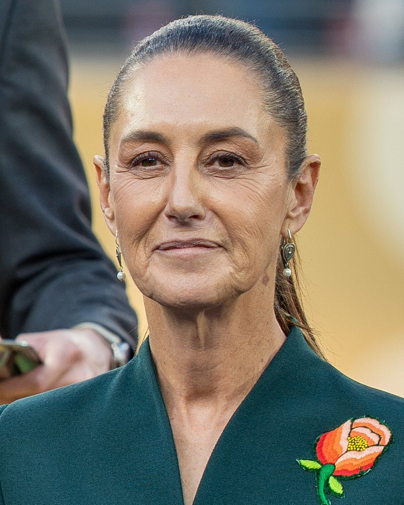
#1134 notasClaudia Sheinbaum Pardo es la presidenta de México desde el 1 de octubre de 2024, siendo la primera mujer en ocupar el cargo. Es física, académica e integrante de Morena, con trayectoria como secretaria del Medio Ambiente del entonces Distrito Federal, delegada de Tlalpan y jefa de Gobierno de la Ciudad de México de 2018 a 2023. Cuenta con estudios de licenciatura en física, maestría y doctorado en ingeniería energética por la Universidad Nacional Autónoma de México.
Guadalupe Taddei Zavala es una funcionaria y administradora pública. Se desempeñó como consejera presidenta del Instituto Nacional Electoral (INE) del 4 de abril de 2023 al 26 de octubre de 2026. Fue designada por insaculación en la Cámara de Diputados para un periodo de nueve años que concluía originalmente en abril de 2032, concluyendo su gestión antes de dicho plazo.
Blanca Yassahara Cruz García es una funcionaria electoral que asumió el cargo de consejera presidenta del Instituto Nacional Electoral (INE) el 27 de octubre de 2026. Su designación ocurrió tras la renuncia de Guadalupe Taddei Zavala, quien dejó el puesto en medio de investigaciones de la Auditoría Superior de la Federación relacionadas con un proveedor del organismo autónomo. Cruz García se desempeña en esta función de dirección dentro de la autoridad electoral federal.
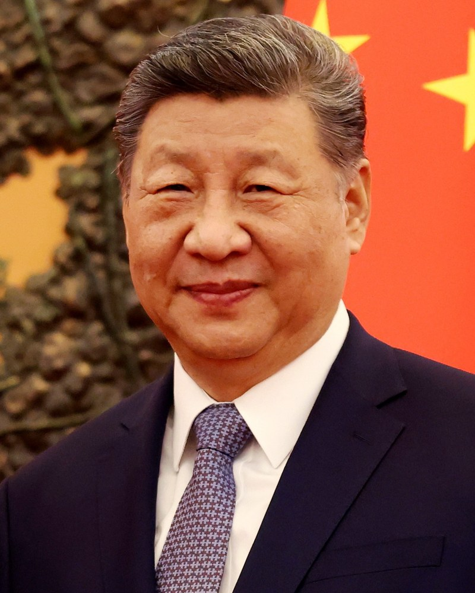
#615 notasXi Jinping es un político e ingeniero químico chino que se desempeña como presidente de la República Popular China desde el 15 de marzo de 2013, así como secretario general del Partido Comunista y presidente de la Comisión Militar Central desde noviembre de 2012. Su trayectoria incluye cargos gubernamentales en provincias como Fujian y Zhejiang, además de la vicepresidencia de la República entre 2008 y 2013. Su gestión concentra la autoridad estatal mediante reformas institucionales, iniciativas económicas y programas de combate a la corrupción.
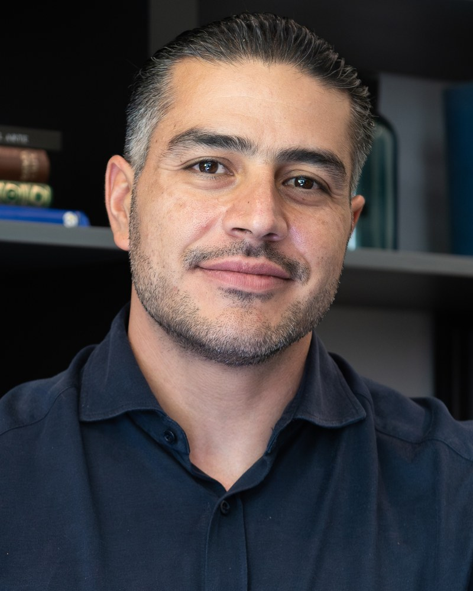
#714 notasOmar Hamid García Harfuch es un político, abogado y expolicía, miembro del partido Morena. Ocupa el cargo de secretario de Seguridad y Protección Ciudadana desde el 1 de octubre de 2024, en la administración de la presidenta Claudia Sheinbaum.
Lorenzo Córdova Vianello es un abogado, académico e investigador. Se desempeñó como consejero electoral del Instituto Federal Electoral a partir de diciembre de 2011 y fungió como presidente del Instituto Nacional Electoral del 3 de abril de 2014 al 3 de abril de 2023, periodo para el cual fue electo por la Cámara de Diputados.
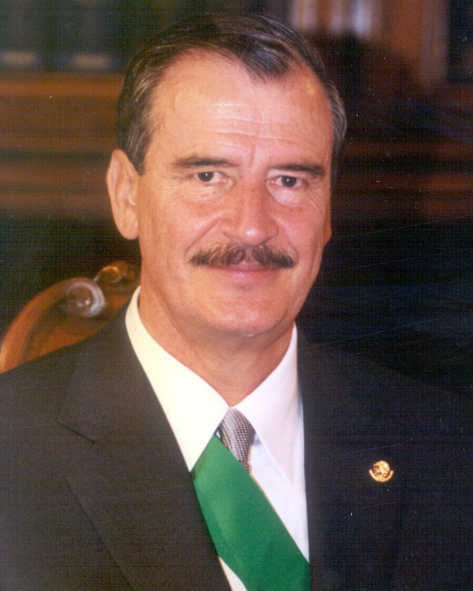
#912 notasVicente Fox Quesada es un empresario y político que se desempeñó como el 62.º presidente de México del 1 de diciembre de 2000 al 30 de noviembre de 2006. Militante del Partido Acción Nacional (PAN), su victoria electoral finalizó con setenta y un años de gobiernos ininterrumpidos del Partido Revolucionario Institucional (PRI). Previamente, ocupó la gubernatura de Guanajuato de 1995 a 2000 y laboró en el sector privado, incluyendo la presidencia de Coca-Cola de México.
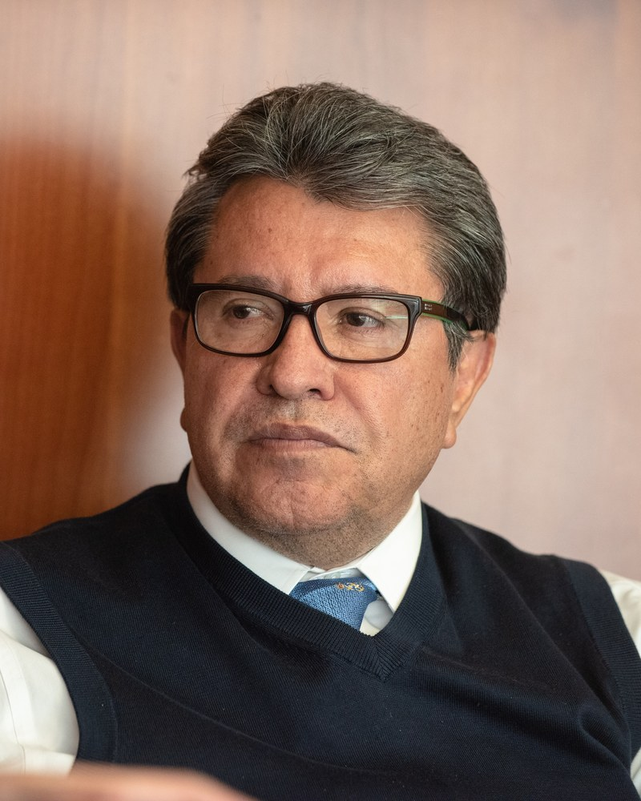
#129 notasRicardo Monreal Ávila es abogado, académico y actual coordinador del grupo parlamentario de Morena en la Cámara de Diputados. Inició su trayectoria política en el PRI, posteriormente militó en el PRD y actualmente integra Morena, partido con el que ha ocupado cargos como gobernador de Zacatecas y senador. Su carrera incluye el liderazgo en el Senado y la promoción de diversas reformas legislativas. Ha enfrentado señalamientos públicos sobre presuntos vínculos familiares con actividades ilícitas, acusaciones que han sido parte de su historial político.
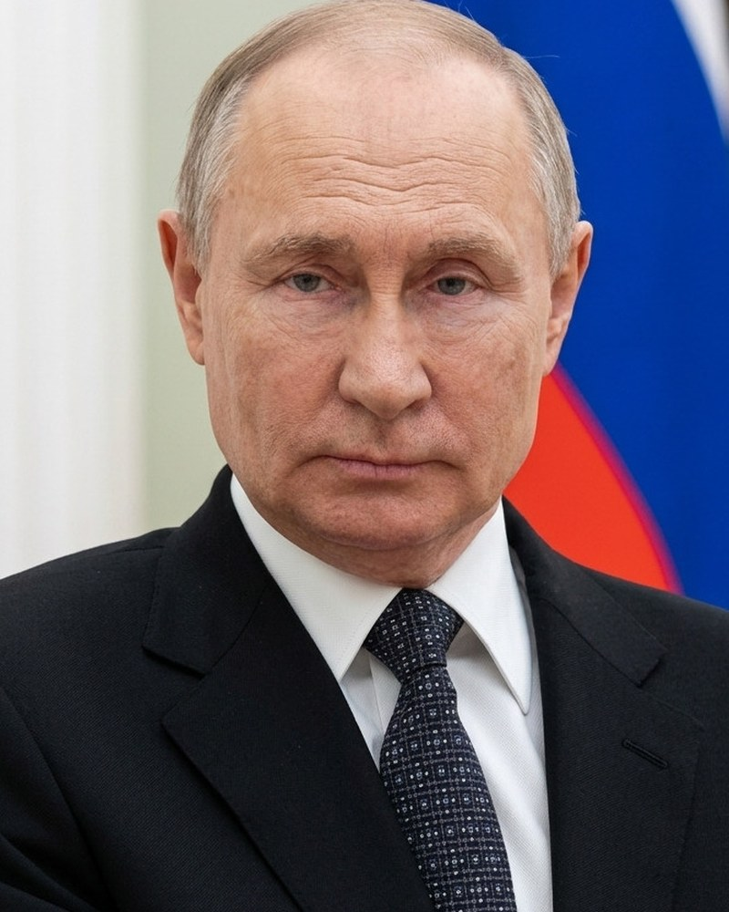
#139 notasVladímir Putin es un abogado y político que ejerce como presidente de la Federación de Rusia desde 2012, cargo que ocupó previamente entre 2000 y 2008. Se desempeñó como presidente del Gobierno en los periodos 1999-2000 y 2008-2012, siendo considerado el líder de facto del país desde el año 2000. Su trayectoria incluye su formación como oficial de inteligencia, la gestión de reformas económicas y estatales, así como la dirección de la política exterior y los conflictos en Chechenia y Ucrania.
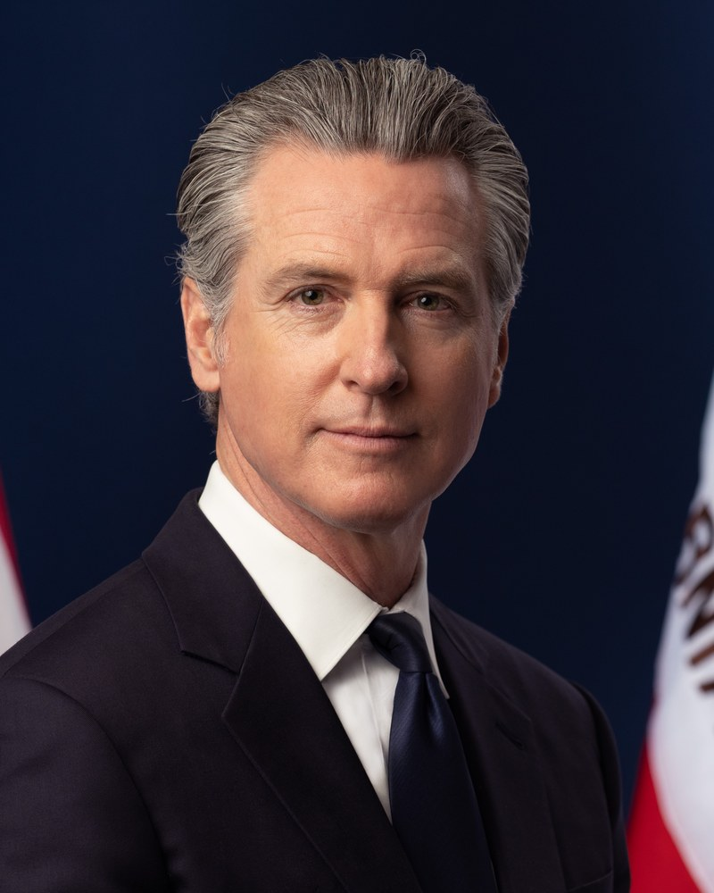
#148 notasGavin Newsom es un político y empresario estadounidense, integrante del Partido Demócrata y actual gobernador de California desde 2019. Previamente se desempeñó como vicegobernador de California entre 2011 y 2019, y como alcalde de San Francisco de 2004 a 2011. Su trayectoria incluye la gestión de políticas sociales y económicas, así como la superación de un proceso de revocación de mandato en 2021 y diversos señalamientos públicos sobre su administración en materia de seguridad, presupuesto y ética personal.
Felipe de Jesús Calderón Hinojosa es un abogado y político que se desempeñó como presidente de México de 2006 a 2012. Tras militar treinta años en el PAN, renunció al partido en 2018. Su gestión se caracterizó por la implementación de una estrategia de seguridad contra el crimen organizado y la firma de la Iniciativa Mérida. El proceso electoral de 2006, en el que resultó electo con un margen del 0.58%, fue ratificado por el Tribunal Electoral tras diversos recursos legales.
 #178 notas
#178 notasMarcelo Luis Ebrard Casaubón es internacionalista y actual secretario de Economía en el gobierno de la presidenta Claudia Sheinbaum. Inició su trayectoria política en el PRI antes de integrarse a la izquierda, desempeñándose como jefe de Gobierno del Distrito Federal entre 2006 y 2012 y secretario de Relaciones Exteriores de 2018 a 2023. Su gestión pública incluye la expansión del Metrobús y la construcción de la Línea 12 del Metro, proyecto cuya infraestructura fue objeto de investigaciones tras el colapso ocurrido en 2021.
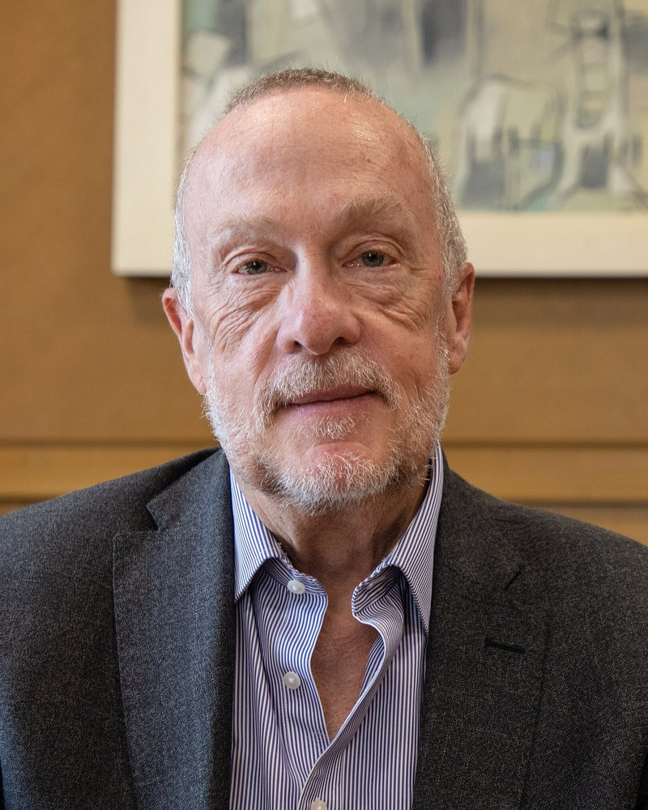
#188 notasJonathan Ernest Heath Constable es un economista que se desempeña como subgobernador del Banco de México desde enero de 2019. Previo a su cargo actual, ejerció como directivo en el sector bancario y como profesor universitario. Su trayectoria profesional incluye el análisis económico y la docencia en diversas instituciones académicas.
Luis Carlos Ugalde Ramírez es un académico y consultor que fungió como consejero presidente del Instituto Federal Electoral entre 2003 y 2007. Tras concluir su gestión, marcada por la controversia tras la elección presidencial de 2006, se ha desempeñado como director general de Integralia Consultores, firma dedicada al análisis de riesgo político y políticas públicas. Es autor de diversos textos sobre el sistema electoral y la gobernanza en el país.
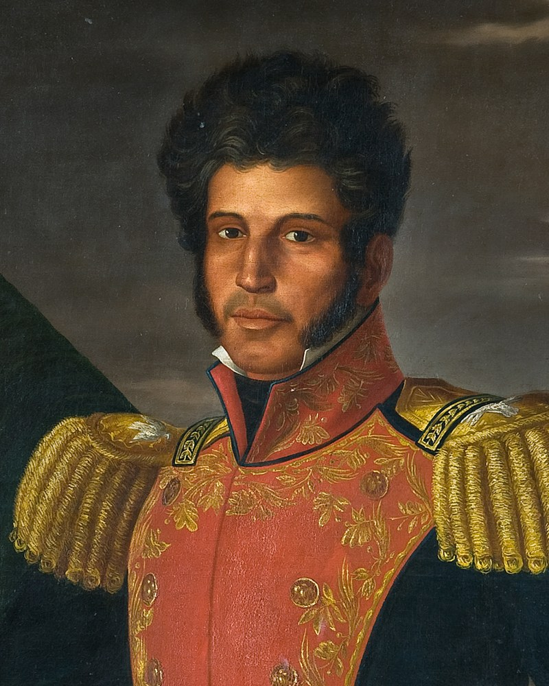
#237 notasVicente Ramón Guerrero Saldaña fue un militar y político de ascendencia indígena y africana que fungió como el segundo presidente de México en 1829. Tras destacar como líder insurgente durante la Guerra de Independencia, pactó la alianza con Agustín de Iturbide en 1821 para consolidar la soberanía nacional. Su gestión presidencial incluyó la emisión del decreto de abolición de la esclavitud en 1829. Fue derrocado tras un golpe de Estado encabezado por Anastasio Bustamante y ejecutado el 14 de febrero de 1831.
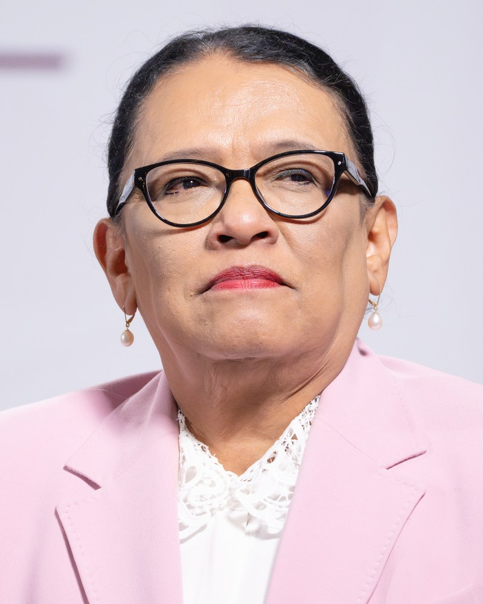
#267 notasRosa Icela Rodríguez Velázquez es una política y funcionaria integrante del partido Morena, quien se desempeña como secretaria de Gobernación desde el 1 de octubre de 2024.
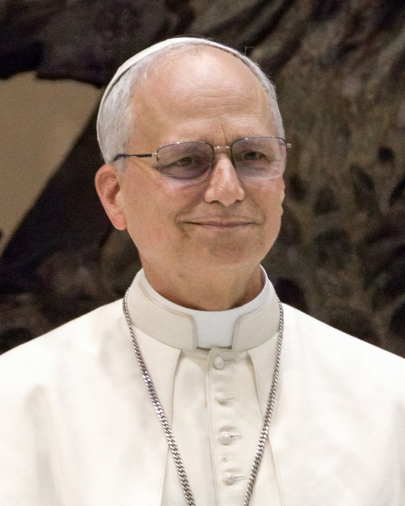
#276 notasLeón XIV, nacido como Robert Francis Prevost en Chicago el 14 de septiembre de 1955, es el 267.º papa de la Iglesia católica y soberano de la Ciudad del Vaticano desde el 8 de mayo de 2025. Es el primer pontífice estadounidense y miembro de la Orden de San Agustín en ocupar el cargo, contando además con ciudadanía peruana. Su gestión se ha centrado en la promoción de los documentos del Concilio Vaticano II como eje rector de su magisterio y la unidad cristiana.
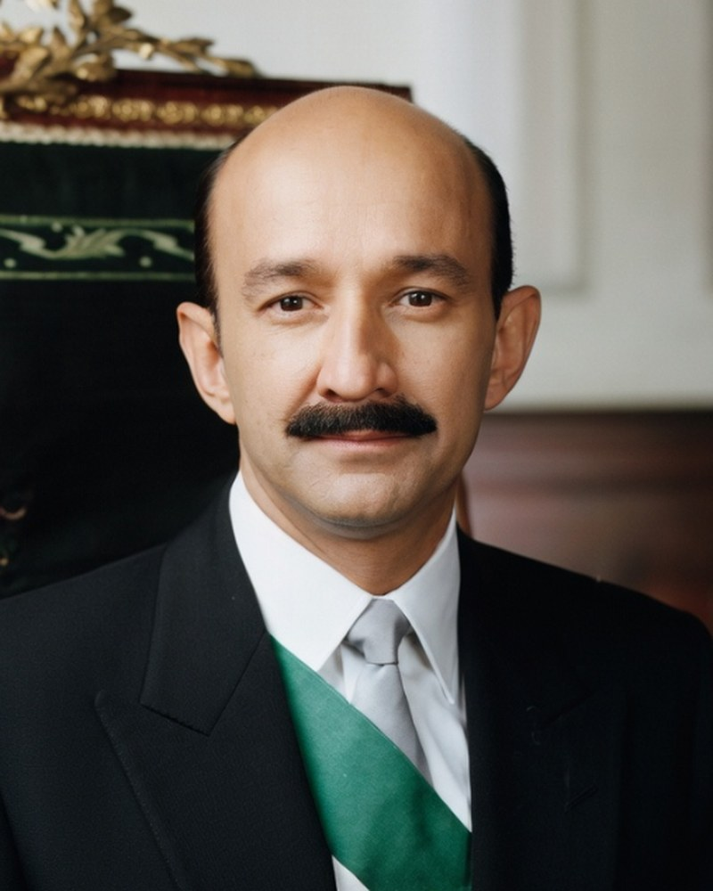
#286 notasCarlos Salinas de Gortari es un economista y político que ejerció como presidente de México de 1988 a 1994. Durante su gestión, implementó políticas de liberalización económica y privatización de empresas estatales, además de promover el Tratado de Libre Comercio de América del Norte. Su elección en 1988 estuvo marcada por acusaciones de fraude electoral, mientras que el final de su sexenio coincidió con crisis económicas y políticas, incluyendo el levantamiento zapatista y el asesinato de Luis Donaldo Colosio.
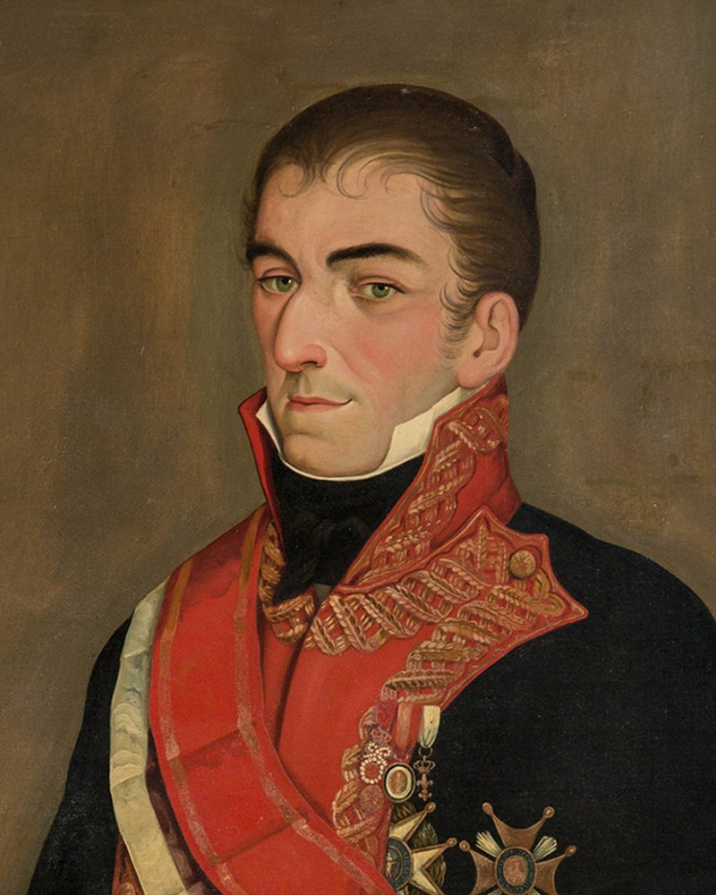
#296 notasJuan José Ruiz de Apodaca y Eliza fue un marino y capitán general de la Real Armada Española, quien fungió como el sexagésimo primer virrey de la Nueva España entre 1816 y 1820. Posteriormente, se desempeñó como jefe político superior de la Nueva España hasta 1821. Su trayectoria administrativa incluyó los cargos de gobernador de Cuba, Florida y Puerto Rico, así como virrey del Reino de Navarra y embajador de España en el Reino Unido.
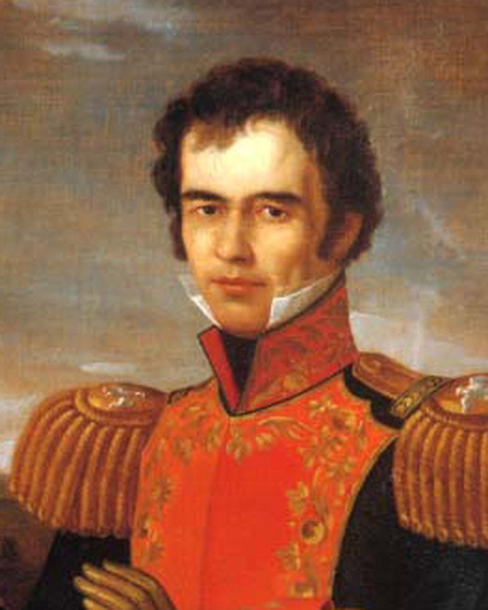
#306 notasGuadalupe Victoria, nacido como José Miguel Ramón Adaucto Fernández y Félix, fue un militar insurgente y el primer presidente de México, cargo que ocupó de 1824 a 1829. Durante su gestión, promulgó la abolición de la esclavitud, fundó el Museo Nacional y ratificó tratados fronterizos con Estados Unidos, enfrentando crisis fiscales y rebeliones internas. Fue el único mandatario de las primeras tres décadas de vida independiente en concluir su periodo constitucional completo, falleciendo en 1843 tras una trayectoria marcada por la inestabilidad política.
Inés Gómez Mont Arena es una presentadora de televisión. Ha sido conductora en diversos programas de entretenimiento en cadenas nacionales.
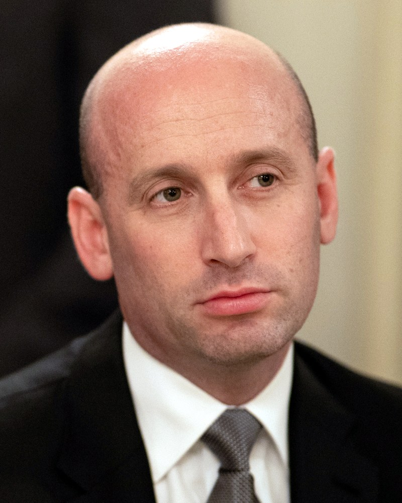
#356 notasStephen Miller es un asesor político estadounidense designado como jefe de Gabinete de la Casa Blanca para la administración de Donald Trump. Se desempeñó como asesor principal de políticas entre 2017 y 2021, periodo en el que impulsó políticas migratorias y fungió como redactor de discursos presidenciales. Tras su gestión inicial, fundó la organización America First Legal. Su trayectoria incluye cargos en oficinas legislativas republicanas y una participación activa en el diseño de estrategias de seguridad nacional y control migratorio.
Galia Borja Gómez es matemática y economista, desempeñándose como subgobernadora del Banco de México desde el 1 de enero de 2021. Fue designada para este cargo tras ser propuesta por el entonces presidente Andrés Manuel López Obrador.
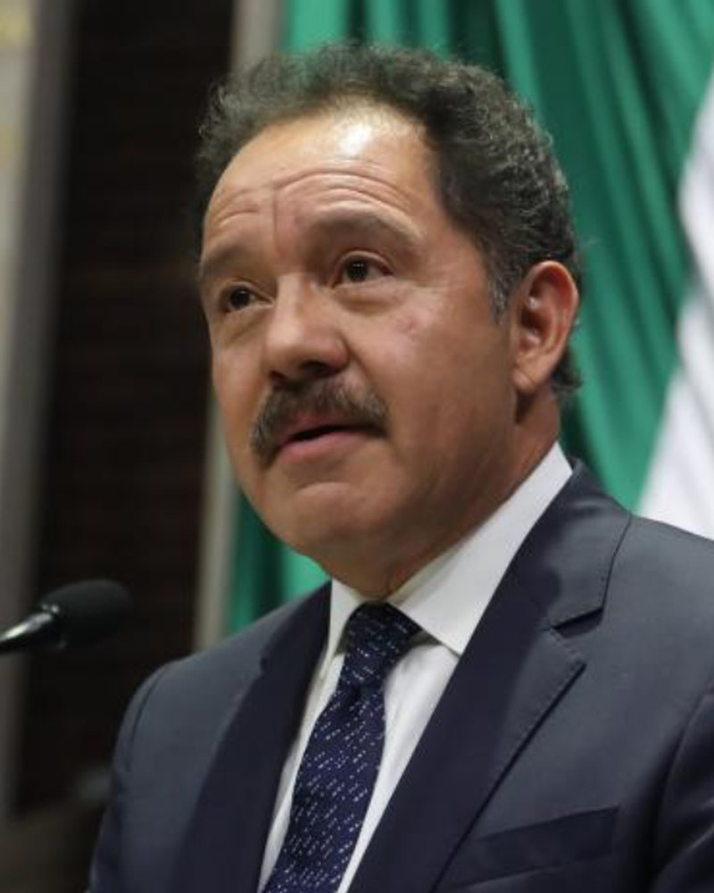
#416 notasIgnacio Mier Velazco es un político y empresario militante de Morena, quien se desempeña como senador de la República desde el 1 de septiembre de 2024. Actualmente, ocupa la presidencia de la Junta de Coordinación Política del Senado, cargo que asumió el 1 de febrero de 2026. Su trayectoria incluye diversos puestos en la administración pública y el Poder Legislativo federal.
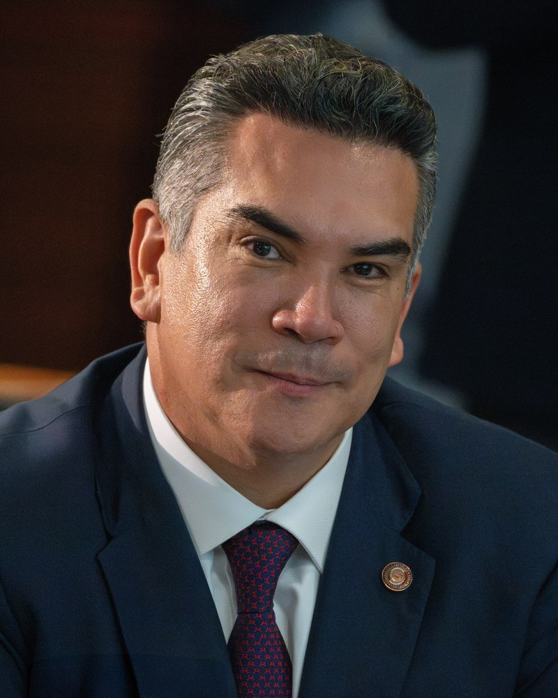
#426 notasRafael Alejandro Moreno Cárdenas es un abogado y político que se desempeña como dirigente nacional del Partido Revolucionario Institucional desde el 18 de agosto de 2019 y senador de la República desde el 1 de septiembre de 2024. Su trayectoria incluye cargos de elección popular y representación partidista en diversos periodos institucionales.
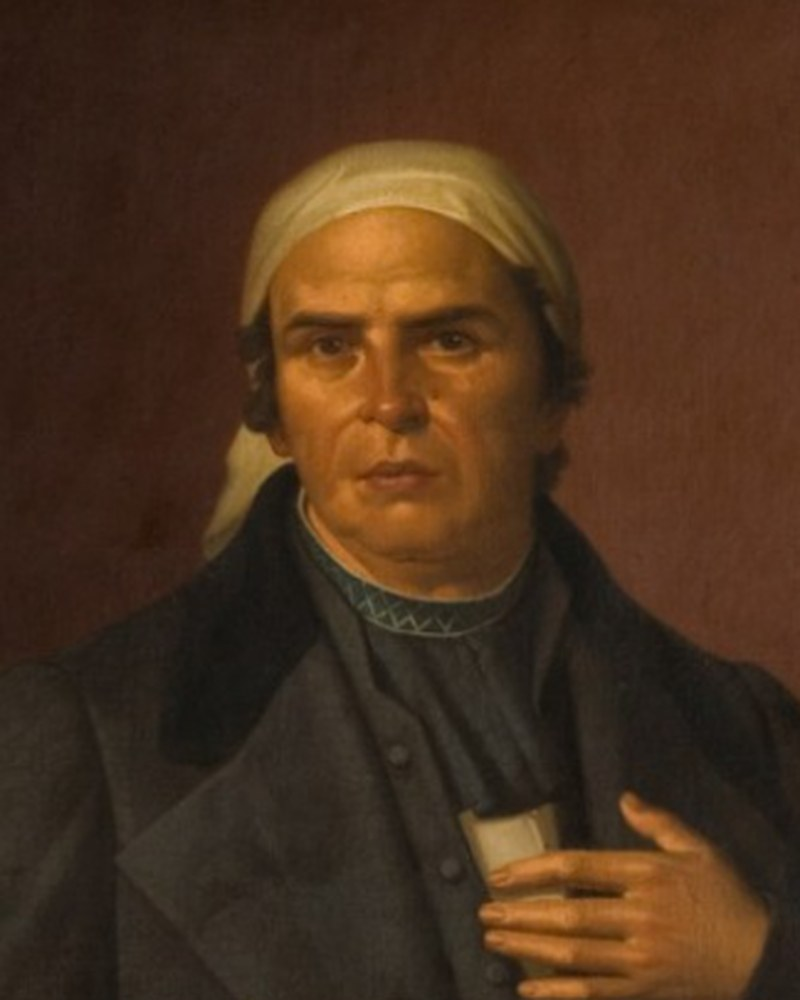
#455 notasJosé María Morelos y Pavón fue un sacerdote, militar y político novohispano que fungió como jefe insurgente durante la segunda etapa de la guerra de Independencia de México entre 1811 y 1815.
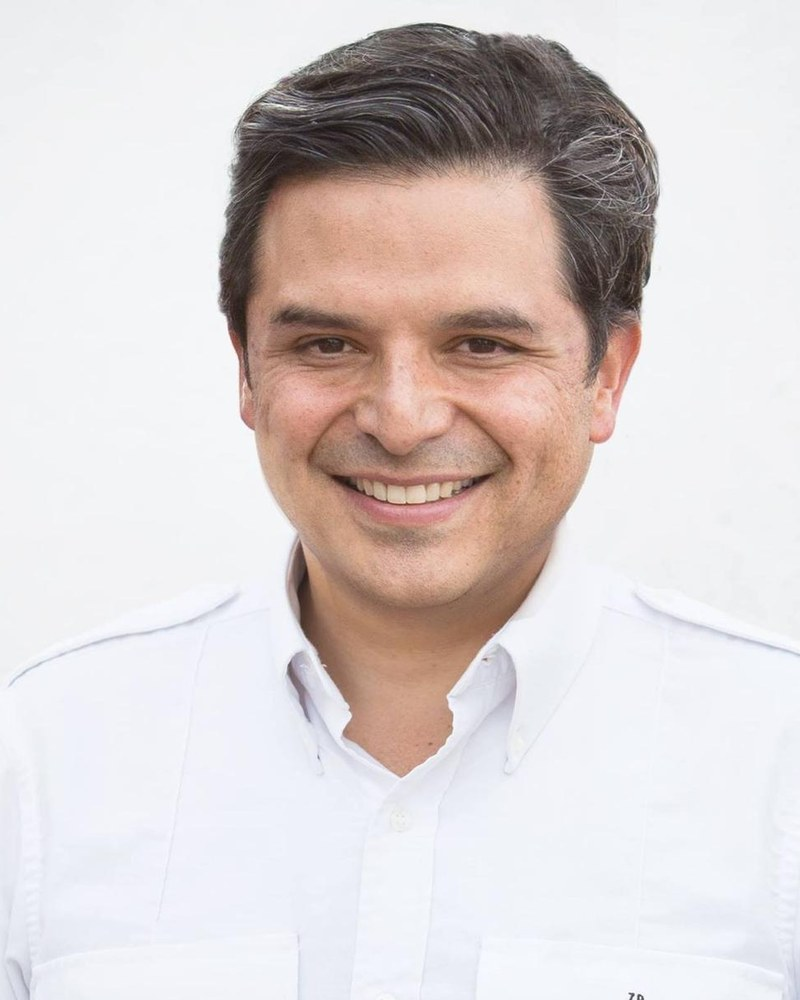
#475 notasZoé Alejandro Robledo Aburto es un político integrante de Morena que se desempeña como director general del Instituto Mexicano del Seguro Social desde el 22 de mayo de 2019. Anteriormente, fungió como senador de la República y diputado federal por el estado de Chiapas. En su trayectoria legislativa, presidió la Comisión de Radio, Televisión y Cinematografía del Senado. Actualmente, mantiene su cargo al frente del IMSS bajo la administración de la presidenta Claudia Sheinbaum.
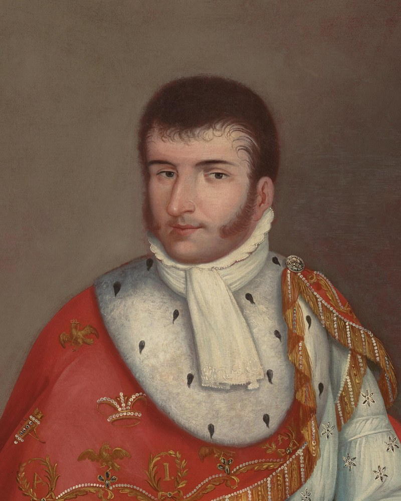
#515 notasAgustín de Iturbide fue un militar que consumó la independencia de México mediante el Plan de Iguala y los Tratados de Córdoba. Fungió como el primer emperador constitucional del país, bajo el título de Agustín I, tras ser proclamado por el Congreso Constituyente. Su gobierno transcurrió del 19 de mayo de 1822 al 19 de marzo de 1823, periodo en el cual se establecieron la bandera y el ejército nacional.
 #525 notas
#525 notasMario Delgado Carrillo es un economista y político, actual secretario de Educación Pública desde el 1 de octubre de 2024 en el gobierno de la presidenta Claudia Sheinbaum. Previamente se desempeñó como dirigente nacional del partido Morena y ocupó cargos como senador y diputado federal.
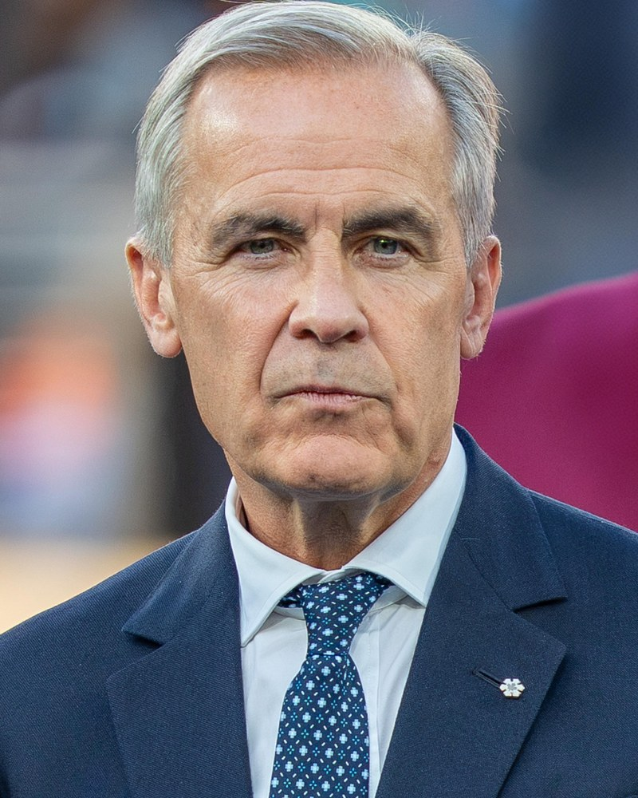
#545 notasMark Carney es un economista y político que ocupa el cargo de primer ministro de Canadá desde el 14 de marzo de 2025 y lidera el Partido Liberal. Previamente, se desempeñó como gobernador del Banco de Canadá entre 2008 y 2013, y del Banco de Inglaterra de 2013 a 2020. Su trayectoria incluye roles directivos en Brookfield Asset Management y como enviado especial de la ONU para la acción climática. Su gestión actual enfrenta retos en política fiscal, vivienda y relaciones comerciales con Estados Unidos.
Keiko Fujimori Higuchi es la presidenta del Perú desde el 28 de julio de 2026, lideresa del partido Fuerza Popular y excongresista. Fue primera dama entre 1994 y 2000, y ha sido candidata presidencial en cuatro ocasiones consecutivas. Su trayectoria incluye procesos judiciales relacionados con investigaciones por presunta corrupción, los cuales concluyeron en desestimaciones entre 2020 y 2025. Actualmente encabeza el Poder Ejecutivo tras resultar electa en los comicios generales de 2026.
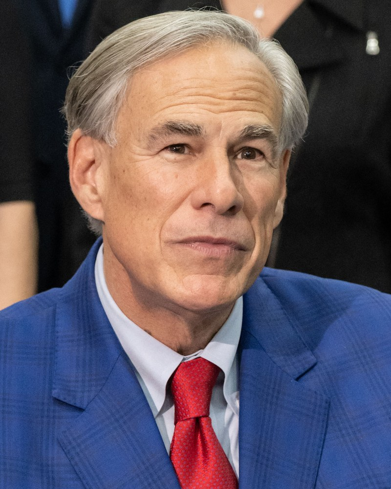
#594 notasGreg Abbott es un abogado y político republicano que se desempeña como gobernador de Texas desde 2015. Previamente, fungió como procurador general del estado de 2002 a 2015 y como juez de la Suprema Corte de Texas entre 1995 y 2001. En 1984, sufrió un accidente que le causó parálisis de la cintura hacia abajo, por lo que utiliza silla de ruedas. Su gestión se ha centrado en políticas de seguridad fronteriza, litigios contra mandatos federales y el desarrollo económico estatal.
Carlos Alberto Manzo Rodríguez fue un político que se desempeñó como diputado federal en la LXV Legislatura y como presidente municipal de Uruapan, cargo que ocupó desde el 1 de septiembre de 2024 como candidato independiente. Durante su gestión, mantuvo una postura pública de confrontación contra grupos del crimen organizado en Michoacán. El 1 de noviembre de 2025, fue asesinado en Uruapan, evento tras el cual su viuda, Grecia Quiroz, asumió la presidencia municipal.
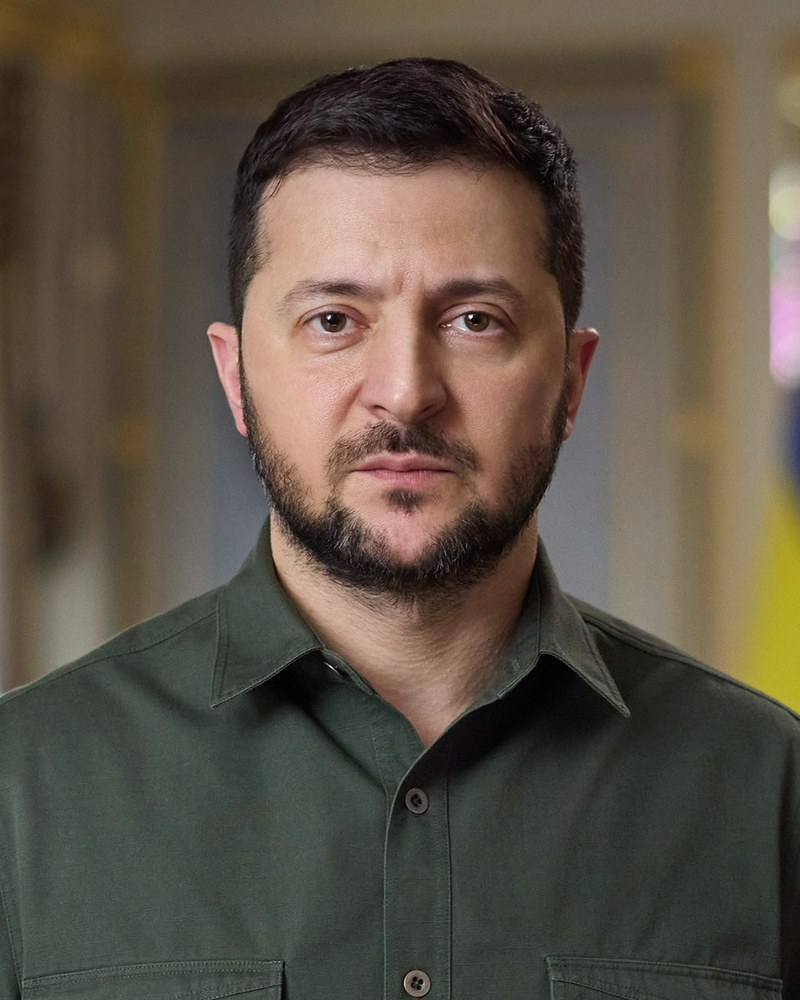
#624 notasVolodimir Zelenski es el sexto presidente de Ucrania desde el 20 de mayo de 2019, además de abogado, exactor y comediante. Asumió el cargo tras obtener el 73.22 por ciento de los votos en las elecciones de 2019 y ha encabezado la administración durante el conflicto armado con Rusia iniciado en 2014 y ampliado en febrero de 2022. Su gestión abarca tanto el ejercicio de facultades ejecutivas como la conducción de la política exterior y de defensa en el contexto bélico actual.
Enrique Peña Nieto es un abogado y político del PRI que se desempeñó como gobernador del Estado de México (2005-2011) y presidente de México (2012-2018). Durante su administración, impulsó reformas estructurales en materia energética, educativa y de telecomunicaciones mediante el Pacto por México. Su gestión concluyó en medio de controversias por casos de corrupción, la desaparición de los 43 estudiantes de Ayotzinapa en 2014 y un incremento en los índices de violencia, factores que impactaron su aprobación pública al finalizar su mandato.
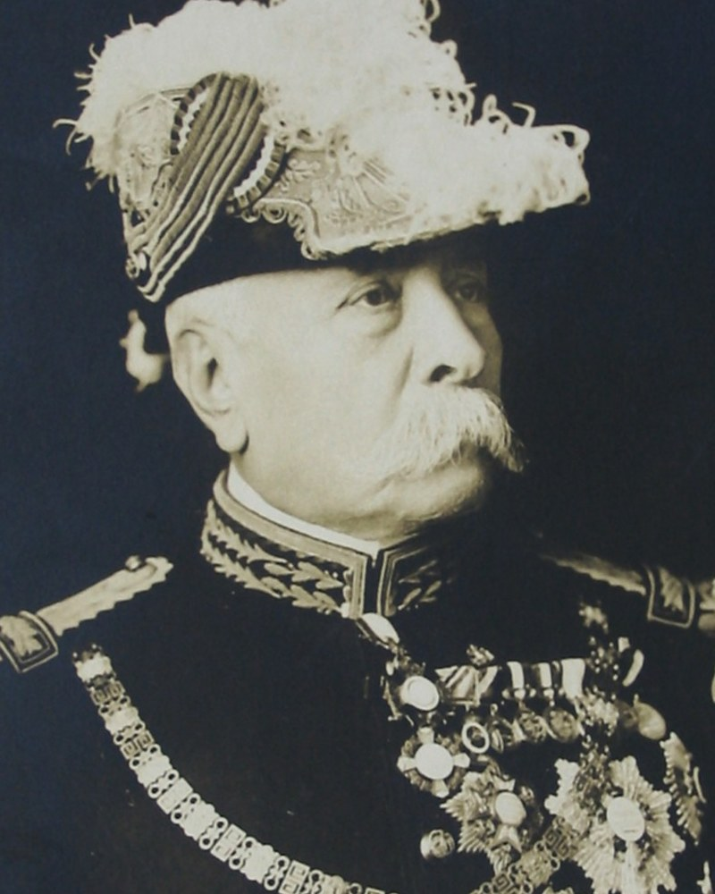
#654 notasJosé de la Cruz Porfirio Díaz Mori fue un general del Ejército y político que se desempeñó como presidente de México de 1876 a 1911, acumulando más de treinta años en el cargo durante un periodo conocido como el Porfiriato. Su trayectoria militar incluyó su participación en la Guerra de Reforma y la intervención francesa. Su gobierno se caracterizó por la modernización económica, la atracción de inversión extranjera y la expansión ferroviaria, así como por un ejercicio autoritario del poder que enfrentó oposición política y social, culminando con el inicio de la Revolución y su renuncia en 1911.
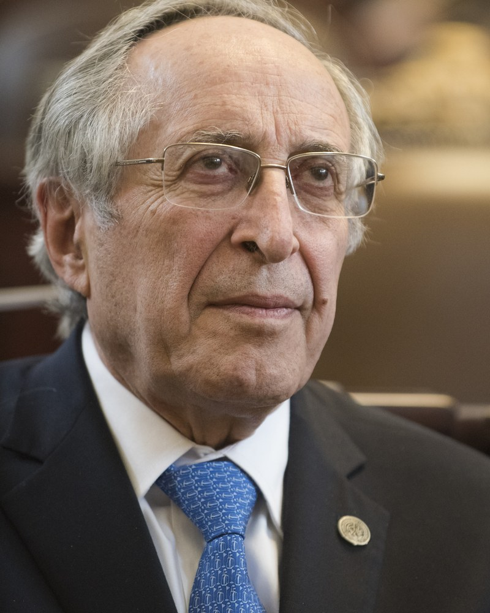
#684 notasDavid Kershenobich Stalnikowitz es médico, investigador y académico especializado en hepatología. Desde el 1 de octubre de 2024, se desempeña como secretario de Salud en el gobierno de la presidenta Claudia Sheinbaum. A lo largo de su trayectoria, ha dirigido el Instituto Nacional de Ciencias Médicas y Nutrición Salvador Zubirán y ha sido reconocido por sus aportaciones científicas en el estudio de las enfermedades del hígado.
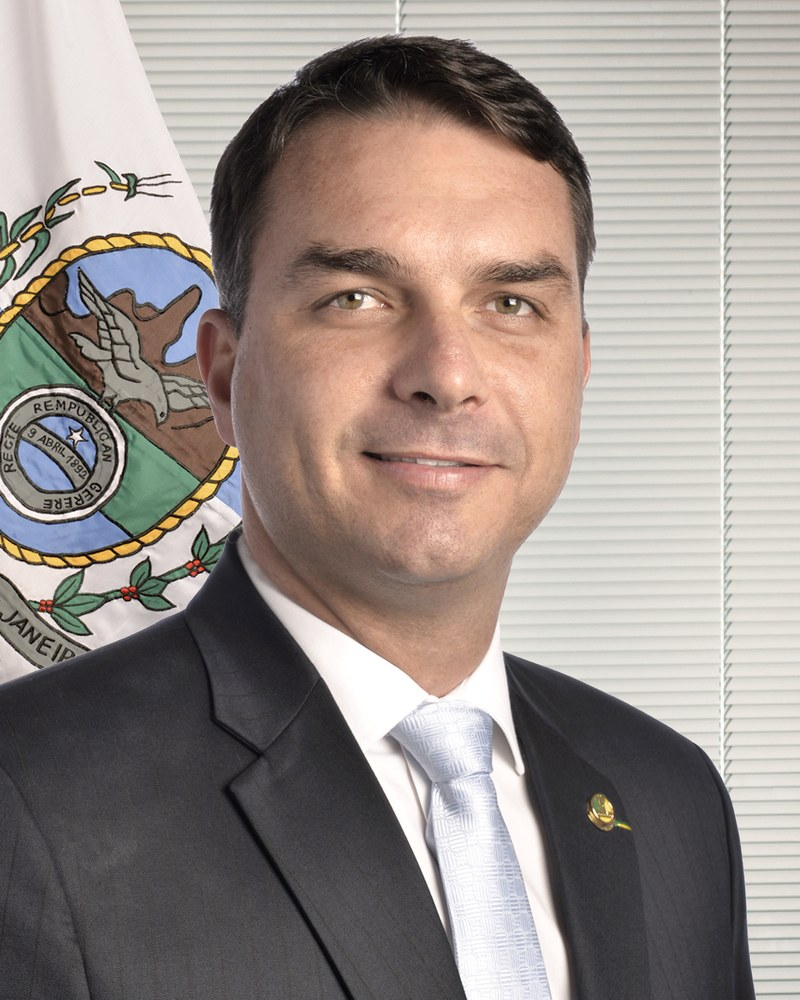
#694 notasFlávio Nantes Bolsonaro es un abogado y político brasileño, integrante del Senado desde 2019. Previamente, fungió como diputado en la Asamblea Legislativa de Río de Janeiro entre 2003 y 2019. Es hijo del expresidente Jair Bolsonaro y miembro del Partido Liberal. Su trayectoria incluye investigaciones judiciales relacionadas con la gestión de recursos en su oficina legislativa, procesos que han sido objeto de debate público en Brasil.
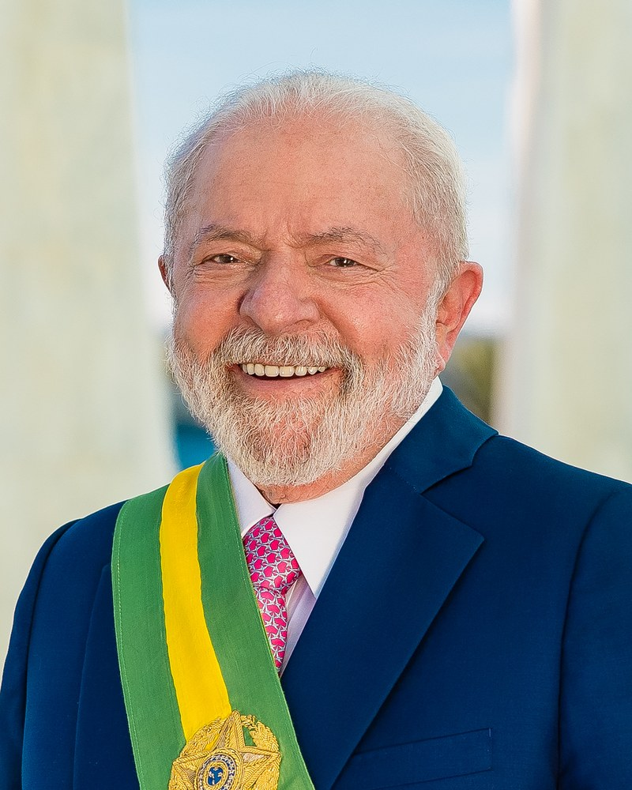
#704 notasLuiz Inácio Lula da Silva es el actual presidente de Brasil, cargo que ocupa desde 2023 tras haberlo ejercido previamente entre 2003 y 2011. Fundador del Partido de los Trabajadores, su trayectoria incluye su labor como sindicalista metalúrgico y diversas controversias judiciales, entre ellas el caso Mensalão y la Operación Lava Jato, por los cuales enfrentó procesos penales que fueron posteriormente anulados por la Corte Suprema. Su gestión se caracteriza por la implementación de programas sociales y una política económica con intervención estatal.
Edmundo Jacobo Molina es un filósofo, profesor e investigador que se desempeñó como secretario ejecutivo del Instituto Nacional Electoral. Ocupó dicho cargo desde el 11 de abril de 2014 hasta el 3 de abril de 2023, periodo en el cual colaboró bajo la presidencia de Lorenzo Córdova.
 #744 notas
#744 notasLuz Elena González Escobar es economista y se desempeña como secretaria de Energía desde el 1 de octubre de 2024, bajo la administración de la presidenta Claudia Sheinbaum. Previamente, ocupó el cargo de secretaria de Administración y Finanzas en la Ciudad de México durante la gestión de Sheinbaum como jefa de Gobierno. Su trayectoria profesional incluye diversos puestos en la administración pública local y federal en el ámbito económico y de gestión financiera.
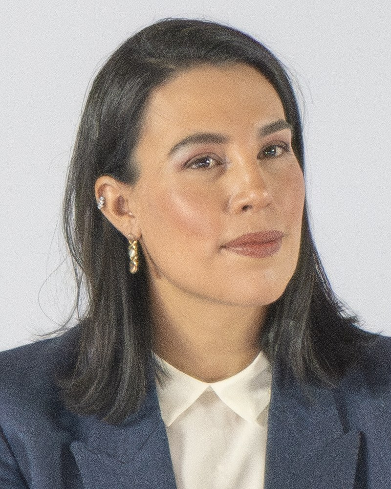
#754 notasJosefina Rodríguez Zamora es una empresaria y funcionaria pública que ocupa la titularidad de la Secretaría de Turismo del Gobierno de México desde el 1 de octubre de 2024. Previamente, se desempeñó como secretaria de Turismo del estado de Tlaxcala entre 2021 y 2024, bajo la administración de la gobernadora Lorena Cuéllar Cisneros.
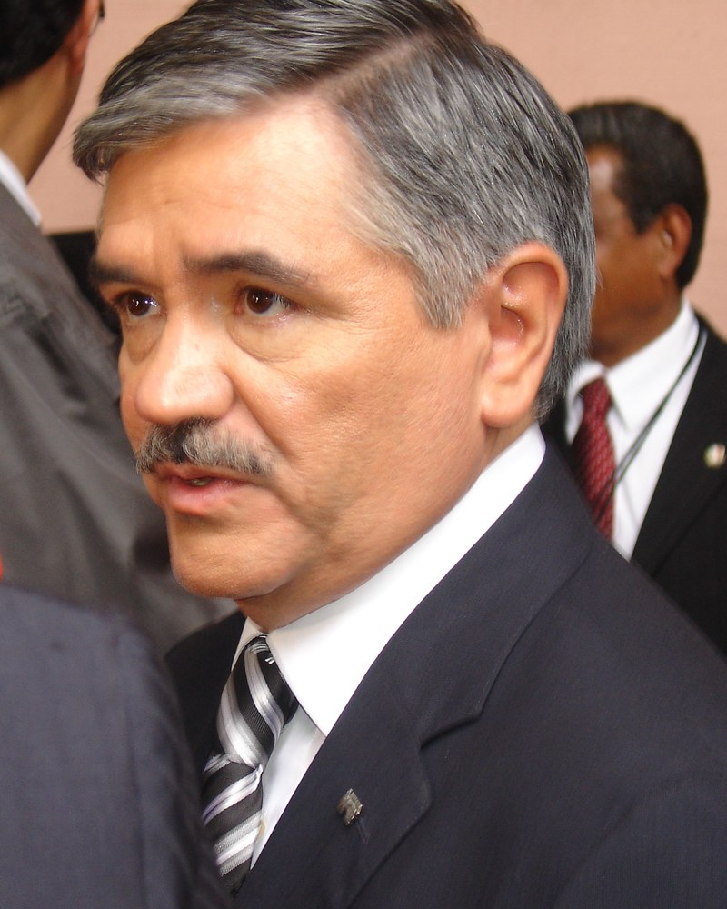
#764 notasLeonardo Valdés Zurita es economista por la Universidad Anáhuac y doctor en sociología por El Colegio de México. Se desempeñó como el último Consejero Presidente del Instituto Federal Electoral (IFE) desde febrero de 2008 hasta octubre de 2013. Su trayectoria académica y profesional se ha centrado en el análisis y la gestión de los procesos electorales en el país.
Merilyn Gómez Pozos es una abogada y política integrante del partido Movimiento Regeneración Nacional (Morena). En su trayectoria legislativa, se ha desempeñado como diputada federal en dos ocasiones. Previo a su militancia actual, formó parte del partido Movimiento Ciudadano.
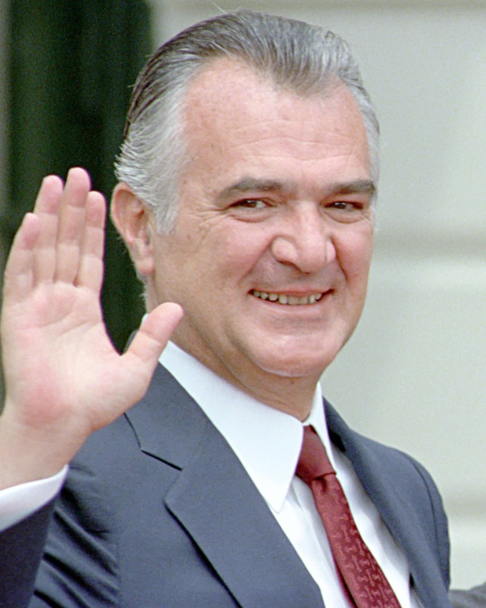
#793 notasMiguel de la Madrid Hurtado fue un abogado y político que se desempeñó como presidente de México de 1982 a 1988. Su gestión enfrentó una crisis económica tras la caída de los precios del petróleo, implementando medidas de austeridad, privatización de empresas estatales y apertura comercial. Durante su mandato, el gobierno fue cuestionado por su respuesta ante el terremoto de 1985 y por señalamientos de irregularidades en el proceso electoral de 1988. Posteriormente, dirigió el Fondo de Cultura Económica hasta su fallecimiento en 2012.
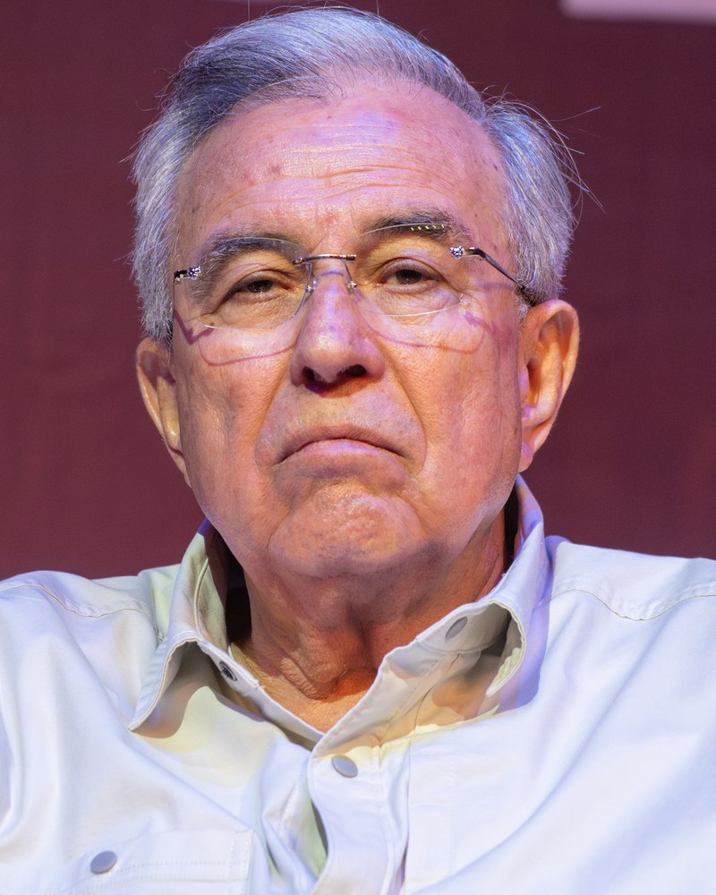
#803 notasPreviamente, fungió como senador de la República durante la LXIV Legislatura y ocupó diversos cargos en la administración pública estatal y federal. Su trayectoria incluye una extensa labor docente en la Universidad Autónoma de Sinaloa, institución de la cual fue rector entre 1993 y 1997.
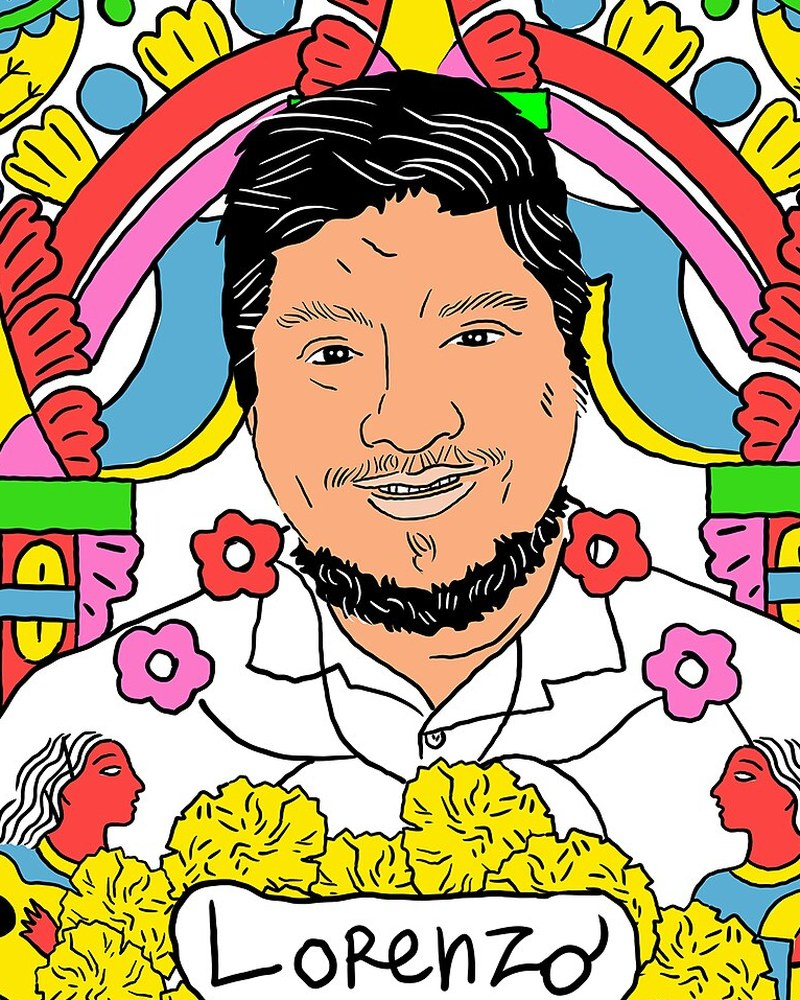
#823 notasJosé Roberto Pulido Jr., conocido como Bobby Pulido, es un cantautor, guitarrista, actor y político estadounidense nacido en Edinburg, Texas, en 1971. Inició su carrera musical a mediados de los años noventa, popularizó el género tex-mex entre el público joven y obtuvo el Latin Grammy al Mejor Álbum Texano en 2022 por el disco *Para Que Baile Mi Pueblo*. En septiembre de 2025, anunció su candidatura por el Partido Demócrata al Congreso de Estados Unidos por el distrito 15 de Texas.
Ricardo Benjamín Salinas Pliego es un empresario y presidente de Grupo Salinas, conglomerado que incluye a Grupo Elektra, TV Azteca, Banco Azteca y Totalplay. Nacido el 19 de octubre de 1955, transformó el negocio familiar de Elektra en la década de 1980 y adquirió la red de televisión privatizada Imevisión en 1993 para fundar TV Azteca. Con un patrimonio que lo sitúa entre las personas más adineradas del país, su trayectoria incluye diversas empresas de comercio, servicios financieros, medios y telecomunicaciones, además de litigios fiscales y controversias públicas.
Andrés Manuel López Beltrán es un político integrante del partido Morena y el segundo hijo del expresidente Andrés Manuel López Obrador. En septiembre de 2024, fue electo como secretario de organización del Comité Ejecutivo Nacional de su partido. Su trayectoria pública se ha centrado en labores de estructura política y coordinación interna dentro de dicha organización partidista.
Pedro Sánchez Pérez-Castejón, nacido el 29 de febrero de 1972, es un político y economista español que se desempeña como presidente del Gobierno de España desde junio de 2018. Es secretario general del Partido Socialista Obrero Español (PSOE), cargo que asumió inicialmente en 2014, retomó en 2017 y ha revalidado en procesos electorales posteriores. Su gestión incluye la formación de sucesivos gobiernos de coalición, la gestión de la pandemia de COVID-18 y diversas medidas legislativas y territoriales.
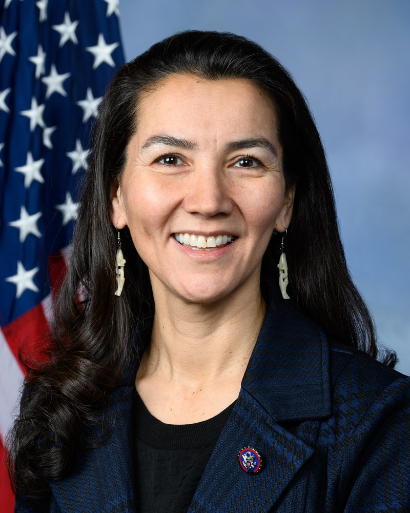
#883 notasMary Peltola es una política estadounidense y ex jueza tribal que se desempeñó como miembro de la Cámara de Representantes por el distrito congresional de Alaska de 2022 a 2025. Nacida en Anchorage el 31 de agosto de 1973 y de ascendencia yup'ik, fue legisladora estatal en la Cámara de Representantes de Alaska entre 1999 y 2009. Militante del Partido Demócrata, centró su labor legislativa en la gestión pesquera, los derechos de subsistencia rural y la protección de recursos vinculados a la economía del estado.
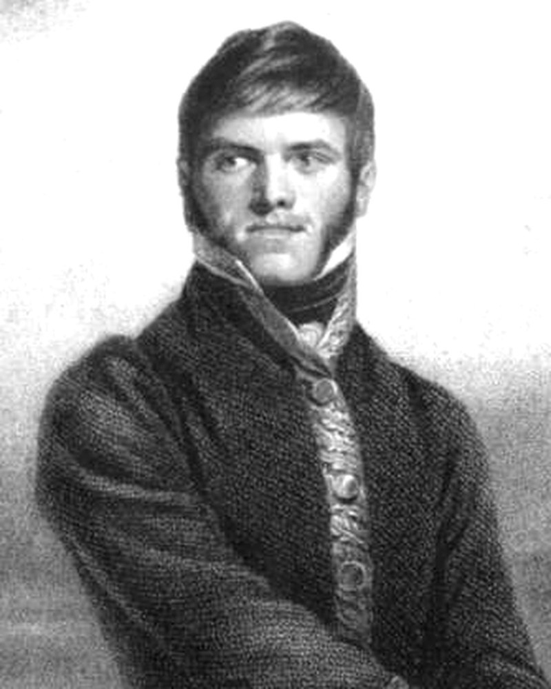
#903 notasFrancisco Javier Mina fue un militar y guerrillero navarro que participó en la Guerra de la Independencia de España y en la Independencia de México. Es reconocido como un pionero de la táctica de guerra de guerrillas, actividad con la que contribuyó a sostener el movimiento insurgente en territorio novohispano. Su actuación militar abarcó conflictos armados en ambas naciones durante el siglo XIX.
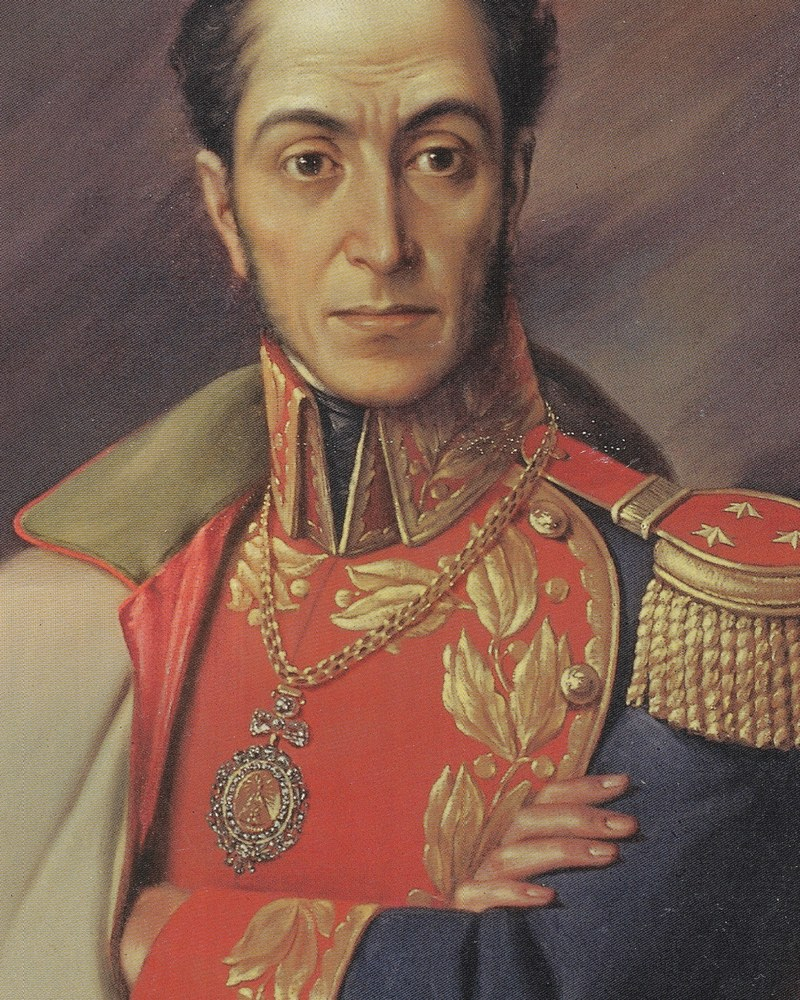
#913 notasSimón Bolívar fue un militar, estratega y político venezolano, reconocido como el Libertador por su papel fundamental en la emancipación hispanoamericana frente al Imperio español. Encabezó las campañas independentistas en los territorios que hoy conforman Venezuela, Colombia, Ecuador y Panamá, además de participar en la independencia de Perú y en el reconocimiento de Bolivia como república.
Hermenegildo Galeana fue un militar e insurgente que participó en la lucha por la independencia de México junto a diversos integrantes de su familia. Pertenecía a una familia de hacendados criollos en la región sur del país. Su actuación se registró durante los primeros años del movimiento armado independentista.
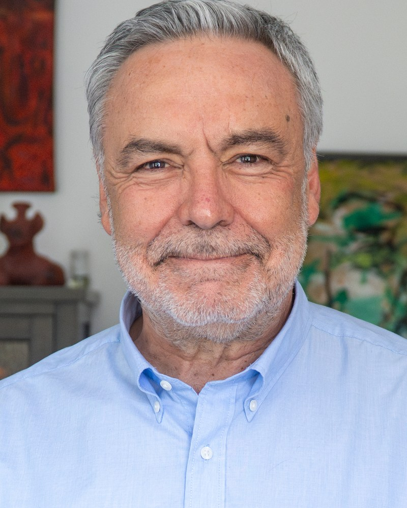
#1003 notasAlfonso Ramírez Cuéllar es un historiador, antropólogo y político afiliado a Morena. Ha desempeñado diversos cargos legislativos, entre ellos como diputado federal en las legislaturas 1997-2000, 2003-2006 y 2018-2021, además de haber sido representante en la Asamblea de Representantes del Distrito Federal entre 1991 y 1994. En 2020 asumió la presidencia interina de su partido en sustitución de Yeidckol Polevnsky.
Elon Musk es un empresario, inversor y magnate con nacionalidad sudafricana y estadounidense. Se desempeña como director general de Tesla y consejero delegado de SpaceX, además de dirigir la plataforma X y participar en Neuralink, The Boring Company y xAI. Entre enero y mayo de 2025, fungió como administrador del Departamento de Eficiencia Gubernamental en la administración federal de Estados Unidos.
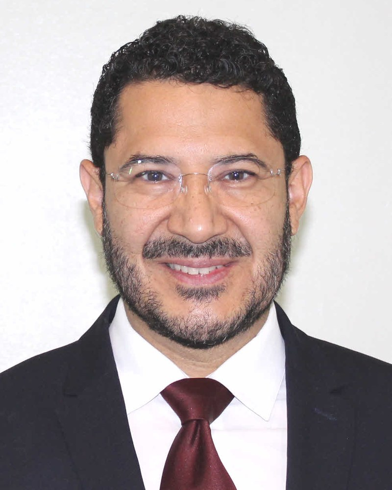
#1023 notasMartí Batres Guadarrama es un político y abogado, miembro del partido Morena. Ocupa el cargo de director general del Instituto de Seguridad y Servicios Sociales de los Trabajadores del Estado (ISSSTE) desde el 5 de octubre de 2024, designado en la administración de la presidenta Claudia Sheinbaum.
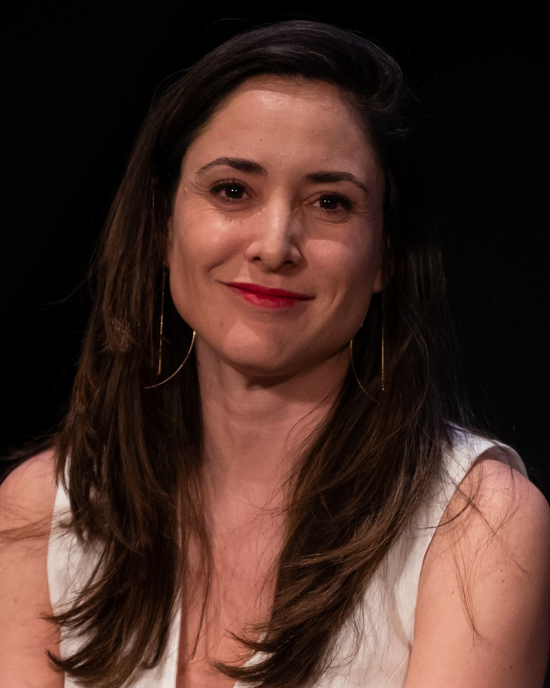
#1033 notasClaudia Stella Curiel de Icaza es una historiadora, gestora cultural y funcionaria pública que asumió el cargo de secretaria de Cultura el 1 de octubre de 2024, en la administración de la presidenta Claudia Sheinbaum. Previamente se desempeñó en la gestión cultural del sector público. Su trayectoria incluye la organización y dirección de diversas actividades artísticas e institucionales.
Hércules Pedro Lorenzo Alliana Rodríguez ejerce como presidente de Paraguay desde el 6 de noviembre de 2026, tras haber asumido previamente la vicepresidencia en agosto de 2023. Político y empresario afiliado a la Asociación Nacional Republicana, se desempeñó como diputado nacional por el departamento de Ñeembucú de 2013 a 2023 y presidió la Cámara de Diputados. Accedió a la jefatura de Estado tras la destitución de Santiago Peña en un proceso legislativo, momento en el que anunció medidas económicas y administrativas.
Victoria Rodríguez Ceja es una economista y funcionaria que se desempeña como gobernadora del Banco de México desde el 1 de enero de 2022, siendo la primera mujer en ocupar dicho cargo. Cuenta con trayectoria en el sector público en áreas financieras y hacendarias. Su designación y gestión al frente de la institución central han estado marcadas por las decisiones de política monetaria en un contexto de presiones inflacionarias.
Omar Mejía Castelazo es un economista y funcionario público. Actualmente se desempeña como miembro de la Junta de Gobierno del Banco de México en el cargo de subgobernador, para un periodo de ocho años que comprende del 18 de enero de 2023 al 31 de diciembre de 2030.
Benito Juárez fue un abogado, político de origen zapoteca y el 26.º presidente de México, cargo que ocupó de 1858 a 1872. Fue gobernador de Oaxaca entre 1847 y 1852, periodo en el que impulsó la educación pública y obras de infraestructura. Durante su presidencia promulgó las Leyes de Reforma, que establecieron el Estado laico y la nacionalización de bienes eclesiásticos, al tiempo que enfrentó conflictos armados internos y la intervención extranjera.
Carlos Slim Helú es un magnate empresarial e inversionista que se desempeña como presidente honorario de América Móvil y encabeza el conglomerado Grupo Carso, con inversiones en telecomunicaciones, construcción, comercio y finanzas. Es considerado la persona más rica de México y figura entre las mayores fortunas a nivel global, con un patrimonio estimado en más de 100 000 millones de dólares. Su trayectoria incluye el inicio de operaciones bursátiles en su juventud, la adquisición de Telmex durante el proceso de privatización de 1990 y diversas iniciativas filantrópicas a través de sus fundaciones.
Sean Duffy es el secretario de Transporte de los Estados Unidos desde enero de 2025, designado por la administración de Donald Trump. Abogado y miembro del Partido Republicano, fue representante en la Cámara Baja federal de 2011 a 2019 y fiscal de distrito en el condado de Ashland entre 2002 y 2010. Asimismo, laboró como comentarista en medios como Fox News y participó en competencias de leñadores.
Benjamin Netanyahu es el primer ministro de Israel desde diciembre de 2022, cargo que también ocupó de 1996 a 1999 y de 2009 a 2021. Es miembro de la Knéset y preside el partido Likud. Su trayectoria política incluye periodos en la jefatura de gobierno, la dirigencia de la oposición y cargos diplomáticos. Además, su gestión comprende diversas etapas de gobierno de coalición y procesos legales en su contra.
Mónica Fernández Balboa es una política y arquitecta afiliada a Morena. Ocupa el cargo de directora del Instituto para Devolver al Pueblo lo Robado (INDEP) desde el 1 de octubre de 2024. Su trayectoria institucional incluye el desempeño en funciones públicas previas dentro de la administración federal y el Poder Legislativo.
Markwayne Mullin es un político y empresario estadounidense afiliado al Partido Republicano. Desempeñó funciones como senador federal por Oklahoma de 2023 a 2026 y asumió el cargo de secretario de Seguridad Nacional el 24 de marzo de 2026. Es miembro inscrito de la Nación Cherokee y cuenta con trayectoria previa en la Cámara de Representantes y en el sector empresarial.
Lenia Batres Guadarrama es una abogada y política, integrante de Morena. Desde el 14 de diciembre de 2023 se desempeña como ministra de la Suprema Corte de Justicia de la Nación, tras ser propuesta por el entonces presidente Andrés Manuel López Obrador. Con anterioridad, ejerció como diputada federal en el Congreso de la Unión del 1 de septiembre de 1997 al 31 de agosto de 2000.
Delfina Gómez Álvarez es una educadora y política de Morena. Desde el 16 de septiembre de 2023 se desempeña como gobernadora del Estado de México, siendo la primera mujer en ocupar el cargo.
Arturo Chávez Chávez es un abogado y político del Partido Acción Nacional. Ocupó el cargo de procurador general de la República del 24 de septiembre de 2009 al 31 de marzo de 2011. Su gestión federal formó parte de la administración del presidente Felipe Calderón.
Anastasio Bustamante fue un médico, militar y político conservador que se desempeñó como presidente de México en tres periodos (1830-1832, 1837-1839 y 1839-1841) y como vicepresidente de 1829 a 1832. Participó en las fuerzas realistas durante la guerra de independencia antes de unirse a las facciones conservadoras y asumir el poder tras derrocar al presidente Vicente Guerrero en 1829. Sus administraciones se caracterizaron por el impulso a un gobierno centralista, la promulgación de leyes migratorias restrictivas hacia Texas y el enfrentamiento a diversas rebeliones federalistas.
Américo Villarreal Anaya es médico cirujano y político, integrante del partido Morena. Desde el 1 de octubre de 2022 se desempeña como gobernador de Tamaulipas.
James David Vance es el 50.º vicepresidente de los Estados Unidos desde el 20 de enero de 2025, bajo la administración de Donald Trump. Nacido el 2 de agosto de 1984 en Middletown, Ohio, es autor, empresario de capital de riesgo y político del Partido Republicano. Previamente se desempeñó como senador por Ohio entre enero de 2023 y enero de 2025, y alcanzó reconocimiento nacional con la publicación de sus memorias Hillbilly Elegy en 2016.
Fernando VII fue rey de España en 1808 y de 1813 a 1833, periodo marcado por la invasión francesa y su cautiverio en Francia tras el Motín de Aranjuez. Tras su restauración mediante el Tratado de Valençay en 1813, disolvió las cortes e anuló la Constitución de 1812 para reinstaurar la monarquía absoluta. Su gobierno enfrentó el levantamiento militar de 1820 que dio paso al Trienio Liberal, la posterior intervención francesa de 1823 que restauró el absolutismo, y la pérdida de la mayor parte de las colonias americanas.
Ernestina Godoy Ramos es una abogada y funcionaria pública que ocupa el cargo de Fiscal General de la República desde el 3 de diciembre de 2025. Previamente, se desempeñó como Procuradora General de Justicia de la Ciudad de México entre 2018 y 2020, y posteriormente como Fiscal General de Justicia de la misma entidad de 2020 a 2024. Su trayectoria incluye la participación en la transición de la Procuraduría a la Fiscalía capitalina durante su gestión al frente de dicha institución.
Es investigador en la Universidad Nacional Autónoma de México y autor de diversos ensayos sobre el sistema político y la transición democrática en el país. Su trayectoria institucional ha estado vinculada al desarrollo de los órganos electorales autónomos y la vida académica nacional.
Higinio Martínez Miranda es un médico y político integrante de Morena. Desde el 1 de septiembre de 2026 funge como presidente del Senado en el tercer año de la LXVI Legislatura.
Reginaldo Sandoval Flores es un político militante del Partido del Trabajo y diputado federal en el Congreso de la Unión desde 2018, año en el que también asumió la coordinación de los diputados de su partido.
Minerva Citlalli Hernández Mora es una política y activista social, miembro del partido Morena. Ocupó el cargo de secretaria de las Mujeres durante el gobierno de la presidenta Claudia Sheinbaum entre 2025 y 2026. Su trayectoria incluye su participación activa en la política nacional y en movimientos sociales dentro de su partido.
Raúl Morón Orozco es un profesor normalista y político integrante de Morena. Ejerció como presidente municipal de Morelia de 2018 a 2021 y se desempeñó como diputado local en el Congreso de Michoacán entre 2008 y 2012. Asimismo, ha ocupado el cargo de senador de la República por Michoacán en los periodos de 2012 a 2018 y de 2024 a 2026.
Grecia Itzel Quiroz García es una política que se desempeña como presidenta municipal sustituta de Uruapan desde el 5 de noviembre de 2025. Asumió el cargo tras el fallecimiento de su esposo, Carlos Manzo, quien ocupaba la presidencia municipal. Fue nominada por el Movimiento del Sombrero y designada por el Congreso de Michoacán para concluir el periodo constitucional que abarca de 2024 a 2027.
Camilo Joaquín Villarruel, conocido artísticamente como Milo J, es un cantante, rapero y folclorista argentino. Nacido en 2006, el artista ha desarrollado su carrera en la industria musical contemporánea, destacándose por su incursión en diversos géneros urbanos y tradicionales. Actualmente, es reconocido por su participación en la escena musical de Argentina y su proyección internacional.
Jorge Abner Drexler Prada es un cantautor, músico, compositor, actor y médico uruguayo radicado en España. Inició su carrera profesional en la medicina antes de dedicarse a la música, donde ha publicado quince álbumes de estudio. Ha sido reconocido con un Premio Óscar, un Premio Goya y múltiples Premios Grammy Latinos por su trayectoria. Su obra integra elementos de géneros latinoamericanos con influencias electrónicas y clásicas, consolidándolo como una figura relevante en la música en lengua española.
Mónica De La Cruz es una política y empresaria estadounidense que representa al distrito 15 de Texas en la Cámara de Representantes desde 2023. Es la primera republicana en ocupar este escaño y la primera mujer hispana de su partido en representar a Texas en el Congreso. Antes de su gestión, se dedicó al sector de seguros y a la pequeña empresa. Su labor legislativa se ha centrado en la seguridad fronteriza, la gestión de recursos hídricos y la aprobación de medidas contra el tráfico de fentanilo.
Fidel Alejandro Castro Ruz fue un abogado y político cubano que encabezó la Revolución cubana tras derrocar a Fulgencio Batista en 1959. Ejerció el poder ejecutivo como primer ministro de 1959 a 1976 y como presidente de 1976 a 2008, estableciendo un régimen de partido único. Su mandato se caracterizó por la implementación de políticas socialistas, la centralización económica y la supresión de la oposición política, siendo calificado por diversos sectores como un dictador con uno de los periodos de gobierno más extensos.
J. D. Vance es el 50.º vicepresidente de los Estados Unidos desde el 20 de enero de 2025, bajo la administración de Donald Trump. Previamente, se desempeñó como senador por Ohio de 2023 a 2025 y sirvió en el Cuerpo de Marines entre 2003 y 2007. Es abogado egresado de Yale, empresario y autor del libro Hillbilly Elegy, publicado en 2016. Su trayectoria incluye su participación en el sector de capital de riesgo antes de iniciar su carrera política en el Partido Republicano.
Alberto Núñez Feijóo es un político español que preside el Partido Popular desde 2022. Previamente, fungió como presidente de la Junta de Galicia entre 2009 y 2022, periodo en el que obtuvo cuatro mayorías absolutas consecutivas. En las elecciones generales de 2023, su partido obtuvo la mayor cantidad de escaños en el Congreso de los Diputados, aunque no alcanzó la mayoría necesaria para gobernar. Su trayectoria incluye el escrutinio público por una fotografía de 1995 con una persona posteriormente condenada por narcotráfico.
Pete Hegseth es el Secretario de Defensa de los Estados Unidos desde el 25 de enero de 2025, bajo la administración de Donald Trump. Es un exoficial de la Guardia Nacional del Ejército, con servicio en Irak y Afganistán, y excomentarista político en Fox News. Egresado de Princeton y Harvard, dirigió organizaciones como Vets for Freedom y Concerned Veterans for America. Su trayectoria incluye la autoría de diversos libros y el reconocimiento con dos Medallas de Bronce por su desempeño militar.
Alfonso Durazo Montaño es un abogado y político de Morena, actual gobernador de Sonora desde 2021. Previamente, se desempeñó como secretario de Seguridad y Protección Ciudadana entre 2018 y 2020, periodo en el que coordinó la creación de la Guardia Nacional. Durante su trayectoria, fue secretario particular y vocero del presidente Vicente Fox de 2000 a 2004. Su gestión ha enfrentado señalamientos sobre seguridad y supuestos vínculos con el crimen organizado, los cuales ha negado formalmente ante la falta de investigaciones oficiales que los sustenten.
Carlos María de Bustamante fue un abogado, historiador, escritor, periodista, editor y político. Participó activamente en la vida pública durante el proceso de independencia y la consolidación del Estado mexicano, destacando por su labor como legislador y cronista de los acontecimientos de su época. Su trayectoria incluyó la edición de publicaciones políticas y la redacción de obras historiográficas sobre la historia de México.
Luis de Onís fue un diplomático español que se desempeñó como ministro plenipotenciario de España en Washington entre 1809 y 1819. Dicho acuerdo estableció la cesión territorial de la Florida a los Estados Unidos y fijó las fronteras entre ambas naciones.
John Quincy Adams fue el sexto presidente de los Estados Unidos de 1825 a 1829, además de diplomático, abogado y legislador. Hijo del segundo mandatario John Adams, se desempeñó como secretario de Estado de 1817 a 1825 y participó en misiones diplomáticas clave en Europa. Posteriormente fue integrante de la Cámara de Representantes y destacó por su labor jurídica en el caso Amistad y su oposición a la expansión territorial.
Andrés Delgado Calderón es un alpinista nacido el 3 de agosto de 1969. Hijo de padres montañistas, creció en un entorno vinculado a esa actividad y se inició a temprana edad en la escalada en roca, para posteriormente dedicarse al alpinismo.
Marcela Figueroa Franco es una politóloga especializada en seguridad pública y profesionalización policial. En octubre de 2024, fue designada por la presidenta Claudia Sheinbaum como titular del Secretariado Ejecutivo del Sistema Nacional de Seguridad Pública. Previamente, se desempeñó como subsecretaria de Desarrollo Institucional en la Secretaría de Seguridad Ciudadana de la Ciudad de México.
Manolo Jiménez Salinas es un político militante del Partido Revolucionario Institucional que ocupa el cargo de gobernador de Coahuila desde el 1 de diciembre de 2023. Previamente, se desempeñó como secretario de Inclusión y Desarrollo Social del estado y fue alcalde de Saltillo en dos periodos consecutivos, de 2018 a 2021. Su trayectoria política se ha desarrollado principalmente dentro de la estructura administrativa y partidista de dicha entidad federativa.
Nayib Bukele es un político y empresario que ocupa la presidencia de El Salvador desde 2019, tras ser reelecto para un segundo mandato en 2024. Su gestión destaca por la implementación de un régimen de excepción que ha resultado en la detención de más de 80,000 personas y una reducción en la tasa de homicidios, además de adoptar el Bitcoin como moneda de curso legal. Estas políticas mantienen altos niveles de aprobación interna, mientras enfrentan señalamientos internacionales por cambios institucionales y derechos humanos.
María Eugenia Campos Galván es una abogada y política integrante del Partido Acción Nacional, quien se desempeña como gobernadora de Chihuahua desde el 8 de septiembre de 2021, siendo la primera mujer en ocupar dicho cargo. Su trayectoria incluye el ejercicio como diputada local y presidenta municipal de Chihuahua. Durante su gestión estatal, ha enfrentado procesos judiciales relacionados con presuntos actos de corrupción vinculados a la administración anterior, los cuales se encuentran en etapas de resolución ante las autoridades competentes.
Ashley Moody es una abogada y política del Partido Republicano, actual senadora de los Estados Unidos por Florida desde el 21 de enero de 2025. Previamente, se desempeñó como fiscal general de Florida de 2019 a 2025 y como jueza de circuito en el condado de Hillsborough. Fue designada al Senado por el gobernador Ron DeSantis para cubrir la vacante de Marco Rubio y posteriormente ratificada en una elección especial en 2026.
Amado Carrillo Fuentes (1956-1997) fue el líder del Cártel de Juárez, organización dedicada al tráfico de cocaína, heroína y marihuana. Apodado «El Señor de los Cielos», utilizó una flota de aeronaves comerciales para transportar droga desde Colombia hacia México y Estados Unidos. En 1997, falleció en la Ciudad de México tras complicaciones derivadas de una cirugía plástica para modificar su apariencia. Su muerte fue confirmada oficialmente por las autoridades mediante pruebas de huellas dactilares y ADN.
Ernesto Fonseca Carrillo, conocido como «Don Neto», fue cofundador del Cártel de Guadalajara, organización dedicada al tráfico de drogas a gran escala. En 1985 fue detenido por su participación en el secuestro y homicidio del agente de la DEA Enrique Camarena y del piloto Alfredo Zavala. Tras cumplir una sentencia de 40 años en prisión y bajo arresto domiciliario por motivos de salud, obtuvo su libertad en abril de 2025. Actualmente, permanece bajo requerimiento judicial en Estados Unidos por los mismos hechos.
Jared Kushner es un empresario e inversionista estadounidense que se desempeñó como asesor senior en la administración de Donald Trump entre 2017 y 2021. Durante su gestión, participó en la creación de la First Step Act y en la firma de los Acuerdos de Abraham. Su trayectoria incluye señalamientos por posibles conflictos de interés relacionados con sus negocios familiares y su papel en la política exterior, temas que han sido objeto de escrutinio público y diversas investigaciones durante su carrera profesional.
Steven Charles Witkoff es un inversionista y desarrollador inmobiliario estadounidense, fundador del Witkoff Group en 1997. En 2025 fue nombrado enviado especial para Oriente Medio, donde participó en negociaciones sobre el conflicto en Gaza y la liberación de rehenes. Su gestión diplomática ha sido objeto de escrutinio por parte de diversos sectores debido a la combinación de sus actividades empresariales con sus funciones oficiales. Previamente, desarrolló su carrera profesional en Nueva York tras graduarse como abogado en la Universidad de Hofstra.
António Luís Santos da Costa es un abogado y político portugués, actual presidente del Consejo Europeo desde 2024. Se desempeñó como primer ministro de Portugal entre 2015 y 2024, tras haber sido alcalde de Lisboa de 2007 a 2015. Asimismo, ocupó la secretaría general del Partido Socialista desde 2014 hasta 2024. Su gestión como primer ministro concluyó tras presentar su renuncia en noviembre de 2023, en el contexto de una investigación judicial sobre presuntas irregularidades en proyectos de energía e hidrógeno.
Actualmente, se desempeña como actor y figura pública en diversos proyectos de entretenimiento en el país.
Ursula von der Leyen es una política y médica alemana, actual presidenta de la Comisión Europea desde 2019. Previamente, ocupó diversos cargos ministeriales en Alemania, incluyendo las carteras de Familia, Trabajo y Defensa. Su gestión ha estado marcada por la implementación del Pacto Verde, la respuesta a la pandemia de COVID-19 y el apoyo a Ucrania. Su trayectoria incluye señalamientos sobre su gestión en el Ministerio de Defensa y cuestionamientos sobre transparencia en procesos de contratación durante su mandato europeo.
Alejandro Svarch Pérez es médico y funcionario público, actualmente titular del IMSS-Bienestar desde el 1 de octubre de 2024. Previamente, se desempeñó como titular de la Comisión Federal para la Protección contra Riesgos Sanitarios (COFEPRIS) durante la administración de Andrés Manuel López Obrador. Su trayectoria en el servicio público ha estado vinculada a la implementación de las políticas de salud del gobierno federal.
Genaro García Luna es un ingeniero y exfuncionario que se desempeñó como secretario de Seguridad Pública de 2006 a 2012, tras dirigir la Agencia Federal de Investigación entre 2001 y 2005. En febrero de 2023, fue declarado culpable en una corte federal de Estados Unidos por cargos de conspiración para el tráfico de cocaína y participación en una empresa criminal. El 16 de octubre de 2024, fue sentenciado a 38 años de prisión y al pago de una multa por recibir sobornos del Cártel de Sinaloa.
Kathleen Courtney Hochul es la gobernadora de Nueva York desde agosto de 2021, siendo la primera mujer en ocupar el cargo. Militante del Partido Demócrata, anteriormente se desempeñó como vicegobernadora, representante federal y funcionaria local en el condado de Erie. Asumió la gubernatura tras la renuncia de Andrew Cuomo y fue electa para periodos completos en 2022 y 2026. Su gestión incluye aumentos en el presupuesto educativo, ajustes al salario mínimo y diversas políticas de seguridad pública, enfrentando críticas por la implementación de sus programas.
Susan Summerall Wiles es una consultora política y funcionaria estadounidense, reconocida por ser la primera mujer en ocupar el cargo de jefa de gabinete de la Casa Blanca, bajo la administración de Donald Trump entre enero de 2025 y noviembre de 2026. Con una trayectoria enfocada en el Partido Republicano, dirigió campañas electorales en Florida para figuras como Rick Scott, Ron DeSantis y Donald Trump. Su gestión se caracterizó por la dirección estratégica de operaciones electorales y labores de cabildeo a nivel estatal y nacional.
Karina Elizabeth Milei es la secretaria general de la Presidencia de Argentina desde el 10 de diciembre de 2023. Licenciada en relaciones públicas y marketing, fue jefa de campaña de La Libertad Avanza en 2023 y actualmente dirige la estructura nacional de dicho partido. Además de sus funciones administrativas, actúa como asesora principal del presidente Javier Milei. En 2025, su gestión ha sido objeto de investigaciones judiciales tras la difusión de grabaciones que vinculan a su entorno con presuntas irregularidades financieras.
Arnaldo Coen es un artista plástico nacido en la Ciudad de México en 1940. Su trayectoria profesional abarca la pintura, el diseño gráfico, la escultura y la escenografía. Es miembro de la Academia de Artes y ha sido reconocido con el Premio Nacional de Ciencias y Artes en el área de Bellas Artes. Su obra ha formado parte de diversas exposiciones individuales y colectivas en instituciones culturales del país.
Jorge Álvarez Máynez es un internacionalista y político que se desempeña como coordinador nacional de Movimiento Ciudadano desde el 5 de diciembre de 2024. Previamente, fungió como diputado federal y fue candidato a la presidencia de la República en las elecciones federales de 2024. Su trayectoria política incluye su militancia en diversos partidos antes de consolidar su papel dentro de la estructura directiva de su actual instituto político.
Noemí Berenice Luna Ayala es una política integrante del Partido Acción Nacional. Actualmente se desempeña como diputada federal y ocupa el cargo de vicecoordinadora del grupo parlamentario de su partido en la Cámara de Diputados durante la LXVI Legislatura.
Rubén Ignacio Moreira Valdez es un abogado, político y teólogo, actualmente diputado federal por el Partido Revolucionario Institucional. Su gestión estatal ha sido objeto de señalamientos por el incremento de la deuda pública y denuncias sobre violaciones a los derechos humanos, temas que han formado parte de su historial político junto a su trayectoria legislativa en el Congreso de la Unión.
Carlos Monsiváis Aceves (1938-2010) fue un escritor, cronista y periodista mexicano, reconocido por su análisis de la cultura popular y la vida urbana. Participó activamente en diversos movimientos sociales, destacando su labor como defensor de los derechos de la comunidad LGBT y su postura crítica frente a la política nacional. A lo largo de su trayectoria, colaboró en múltiples medios de comunicación y publicó una extensa obra que documentó las transformaciones sociales y políticas de México durante la segunda mitad del siglo XX.
Margarita González Saravia Calderón es una política y empresaria, integrante del partido Morena. Desde el 1 de octubre de 2024, ejerce como gobernadora de Morelos, convirtiéndose en la primera mujer en ocupar dicho cargo.
Eduardo Ramírez Aguilar es un abogado y político integrante del partido Morena, quien actualmente se desempeña como gobernador de Chiapas desde el 8 de diciembre de 2024.
Pablo Emilio Escobar Gaviria fue un narcotraficante y político colombiano, fundador y líder del Cártel de Medellín. En 1982 fue electo representante suplente ante el Congreso de Colombia, cargo del que fue expulsado en 1983 tras revelarse sus actividades ilícitas. Durante su trayectoria, controló gran parte del tráfico internacional de cocaína y financió una campaña de violencia contra el Estado para oponerse a la extradición. Falleció el 2 de diciembre de 1993 en Medellín durante un operativo de las fuerzas de seguridad.
Carlos Enrique Lehder Rivas es un ex narcotraficante colombo-alemán, cofundador del Cártel de Medellín y pionero en la logística de transporte de cocaína mediante aeronaves. En 1987 fue capturado y extraditado a Estados Unidos, donde recibió una sentencia de cadena perpetua tras ser declarado culpable de importar drogas. Tras colaborar como testigo en procesos judiciales, su condena fue reducida, lo que permitió su liberación en 2020 y posterior traslado a Alemania. En marzo de 2025, un tribunal colombiano dictaminó la prescripción de cargos pendientes en su contra.
Isaac Herzog es el undécimo presidente de Israel, cargo que ocupa desde julio de 2021. Abogado de profesión, fue líder del Partido Laborista, ocupó diversos cargos ministeriales y presidió la Agencia Judía para Israel. Es hijo del expresidente Chaim Herzog y nieto del primer Gran Rabino asquenazí del país. Durante su gestión, ha enfocado su labor en la unidad nacional ante desafíos de seguridad y en la diplomacia internacional, enfrentando críticas por su postura ante políticas gubernamentales y procesos legales internacionales.
Alejandro Armenta Mier es un politólogo y político integrante de Morena, quien ejerce como gobernador de Puebla desde el 14 de diciembre de 2024.
Rebbeca Marie Gomez, conocida como Becky G, es una cantante, compositora, actriz y bailarina estadounidense de origen mexicano. Inició su carrera en 2011 mediante la publicación de videos en YouTube, lo que derivó en contratos discográficos y su posterior incursión en la música latina y el cine. Ha lanzado diversos álbumes de estudio, entre ellos Mala Santa, Esquinas y Encuentros. A lo largo de su trayectoria, ha sido reconocida con múltiples premios, incluyendo American Music Awards.
Thomas Jonathan Ossoff es senador de Estados Unidos por Georgia desde 2021, integrante del Partido Demócrata. Previamente se desempeñó como productor de periodismo de investigación enfocado en seguridad nacional. En 2017 fue candidato a la Cámara de Representantes y en 2021 resultó electo al Senado tras vencer en segunda vuelta a David Perdue. Como legislador, ha promovido iniciativas sobre tráfico de fentanilo, salud mental para veteranos y protección de menores, además de participar en investigaciones sobre el sistema penitenciario y de cuidado infantil.
Keisha Lance Bottoms es una abogada y política estadounidense, actual gobernadora electa de Georgia. Se desempeñó como alcaldesa de Atlanta de 2018 a 2022, periodo marcado por la gestión de la pandemia, protestas sociales y un incremento en los índices de homicidios. Previamente, fue integrante del Concejo de Atlanta, jueza municipal y asesora en la administración de Joe Biden. En 2026, resultó electa gobernadora tras derrotar al candidato republicano Rick Jackson.
Edward Miner Lamont Jr. es un empresario y político estadounidense que funge como el 89.º gobernador de Connecticut desde 2019. Tras fundar Lamont Digital Systems en 1985, inició su trayectoria política en 2006 al desafiar a Joe Lieberman en las primarias demócratas. Durante su gestión, ha implementado políticas fiscales y de salud pública, enfrentando críticas por sus medidas durante la pandemia y cuestionamientos sobre su administración estatal. Fue reelecto en 2022 tras ganar los comicios estatales.
Wes Moore es el gobernador de Maryland desde enero de 2023 y el primer afroestadounidense en ocupar dicho cargo. Previamente, se desempeñó como director ejecutivo de la Fundación Robin Hood, fue oficial del Ejército con despliegue en Afganistán y autor. Su gestión ha sido objeto de escrutinio por la rotación administrativa y el cumplimiento de sus promesas de campaña. Asimismo, su trayectoria ha enfrentado cuestionamientos sobre discrepancias en su narrativa personal y la precisión de sus antecedentes militares, incluyendo una rectificación sobre una condecoración.
Florence Rose Pugh es una actriz británica nacida en 1996, reconocida por sus actuaciones en cine independiente y producciones comerciales. Debutó en 2014 con The Falling y alcanzó relevancia tras protagonizar Lady Macbeth en 2016. Ha participado en proyectos como Little Women, Oppenheimer y la franquicia de Marvel, obteniendo nominaciones a premios BAFTA y al Óscar. Su trayectoria incluye labores de producción ejecutiva y ha sido objeto de atención mediática por su vida personal y declaraciones públicas sobre diversos temas.
Es doctor en Historia por el Colegio de México y ha publicado diversas obras de narrativa y ensayo político. A lo largo de su trayectoria, ha sido profesor en instituciones académicas y colaborador en diversos medios de comunicación impresos y electrónicos, manteniendo una participación constante en el análisis de la vida pública nacional.
Guadalupe Acosta Naranjo es un economista, sindicalista y político, actualmente presidente y fundador del partido Somos desde 2026. A lo largo de su trayectoria, ha participado activamente en la vida pública nacional como activista y dirigente partidista. Su carrera política incluye diversos cargos de representación y liderazgo dentro de las estructuras institucionales del país.
José López Portillo y Pacheco fue un abogado, académico y político que fungió como presidente de México entre 1976 y 1982. Durante su gestión, el país experimentó un auge petrolero seguido de una severa crisis económica y la devaluación del peso en 1982. Su administración se caracterizó por la reforma política de 1977 y la nacionalización de la banca al finalizar su mandato. Fue el último presidente del periodo de hegemonía priista con candidato único en la elección de 1976.
Christa Gail Pike es una ciudadana estadounidense sentenciada a la pena de muerte en Tennessee por el homicidio de Colleen Slemmer, cometido en 1995. A los 20 años, fue declarada culpable de tortura y asesinato en primer grado tras atraer a la víctima a una zona boscosa junto a dos cómplices. Actualmente, Pike es la única mujer que permanece en el corredor de la muerte de dicho estado, tras haber sido condenada por un jurado del condado de Knox en 1996.
Kenia López Rabadán es abogada y política integrante del Partido Acción Nacional. Desde el 1 de septiembre de 2024, se desempeña como diputada federal en la LXVI Legislatura del Congreso de la Unión.
Columba Jazmín López Gutiérrez es ingeniera agrónoma y se desempeña como secretaria de Agricultura y Desarrollo Rural desde el 1 de mayo de 2026, bajo la administración de la presidenta Claudia Sheinbaum. Es la primera mujer en ocupar la titularidad de esta dependencia en la historia del país. Su trayectoria profesional se ha centrado en el ámbito de la agronomía y la gestión pública en el sector agropecuario.
Roger Marshall es senador por Kansas desde 2021 y miembro del Partido Republicano. Previamente, fungió como representante del primer distrito de Kansas entre 2017 y 2021. Médico gineco-obstetra de profesión, cursó sus estudios en la Universidad de Kansas y sirvió en la Reserva del Ejército de 1984 a 1991. En su trayectoria legislativa, ha centrado su labor en políticas agrícolas, reformas al sistema de salud y la supervisión de la respuesta gubernamental ante la pandemia de COVID-19.
Jamieson Greer es un abogado y veterano de la Fuerza Aérea que se desempeña como Representante de Comercio de los Estados Unidos desde el 27 de febrero de 2025. Previamente, fungió como jefe de gabinete en la oficina del Representante de Comercio entre 2017 y 2020, participando en la negociación del T-MEC y acuerdos con China. En el sector privado, fue socio de la firma King & Spalding, donde se especializó en derecho comercial internacional y defensa de políticas de seguridad nacional.
Barack Hussein Obama II es un abogado y político estadounidense que fungió como el 44.º presidente de los Estados Unidos entre 2009 y 2017. Miembro del Partido Demócrata, se desempeñó previamente como senador por Illinois de 2005 a 2008. Fue el primer afroestadounidense en ocupar la presidencia, tras una trayectoria que incluyó la organización comunitaria en Chicago y la docencia en derecho constitucional. Su administración gestionó reformas al sistema de salud, políticas económicas y diversas decisiones de seguridad nacional.
Manuel Bartlett Díaz es un político con una trayectoria de cinco décadas, destacando como Secretario de Gobernación (1982-1988), Secretario de Educación Pública (1988-1992), Gobernador de Puebla (1993-1999) y director general de la Comisión Federal de Electricidad (2018-2024). Su carrera incluye señalamientos por la organización de la elección presidencial de 1988, acusaciones sobre activos no declarados y cuestionamientos por el caso Enrique Camarena. A la fecha, no cuenta con sentencias judiciales condenatorias respecto a dichas controversias.
Abdul El-Sayed es un epidemiólogo y político del Partido Demócrata, senador electo por Míchigan. Egresado de la Universidad de Michigan y Oxford, fungió como director del Departamento de Salud de Detroit y del condado de Wayne, donde gestionó programas de alivio de deuda médica. En 2018 contendió por la gubernatura de Míchigan y en 2026 resultó electo al Senado estadounidense tras derrotar a Mike Rogers. Su trayectoria incluye el activismo por el sistema de salud de pagador único y diversas críticas sobre su gestión y posturas políticas.
Mike Rogers es un político republicano y exagente del FBI que representó al octavo distrito de Míchigan en la Cámara de Representantes de 2001 a 2015. Durante su gestión, presidió el Comité Selecto Permanente de Inteligencia, enfocándose en ciberseguridad y políticas de seguridad nacional. Previamente, formó parte del Senado estatal de Míchigan entre 1995 y 2001. En 2024, fue el candidato republicano al Senado de los Estados Unidos por Míchigan, tras una trayectoria profesional vinculada a la consultoría en defensa y ciberseguridad.
Donald Tusk es el primer ministro de Polonia, cargo que ocupa actualmente desde 2023 y que desempeñó previamente entre 2007 y 2014. Cofundador del partido Plataforma Cívica, ejerció como presidente del Consejo Europeo de 2014 a 2019. Su trayectoria incluye su participación en movimientos de oposición al régimen comunista en la década de 1980 y una carrera parlamentaria iniciada en los años 90 enfocada en reformas económicas y la integración europea.
Volodímir Zelenski es un abogado, exactor y comediante que ocupa la presidencia de Ucrania desde el 20 de mayo de 2019. Su gestión ha estado marcada por la guerra iniciada en 2014 y la invasión rusa a gran escala desde 2022. Durante su mandato, ha enfrentado señalamientos por presunta corrupción, medidas de control mediático y la gestión de la conscripción militar. Ha recibido diversos reconocimientos internacionales por su papel en el conflicto, mientras mantiene la dirección del país bajo estado de excepción.
Rubén Figueroa Alcocer es un político militante del Partido Revolucionario Institucional. Durante su trayectoria ocupó diversos cargos públicos y de representación popular en la estructura de su partido.
Jonathan Kreiss-Tomkins es un político estadounidense y gobernador electo de Alaska. Miembro del Partido Demócrata, se desempeñó como integrante de la Cámara de Representantes de Alaska entre 2013 y 2023, representando distritos del sureste del estado. Realizó estudios en la Universidad de Yale sin obtener un título académico. En noviembre de 2026, resultó electo gobernador tras obtener la mayoría de votos bajo el sistema de elección por orden de preferencia del estado.
Edna Karina Torres Hernández es una influencer, creadora de contenido y estilista profesional. Se dio a conocer públicamente a través de su participación en el colectivo conocido como Las Perdidas, junto a Wendy Guevara y Paola Suárez. Actualmente, se desempeña como figura pública en plataformas digitales y empresaria en el sector de la belleza.
Wendy Guevara Venegas es una celebridad de internet, actriz, cantante y presentadora de televisión nacida en León, Guanajuato. Desde entonces, ha incursionado en la conducción de programas en TelevisaUnivision y ha desarrollado diversos proyectos empresariales. Su figura pública ha generado debates en el ámbito mediático sobre la identidad de género y la representación en el entretenimiento nacional.
Rafael Márquez Álvarez es el director técnico de la selección nacional. Como futbolista profesional, se desempeñó como defensa en clubes como Atlas, Mónaco y Barcelona, además de capitanear al equipo nacional en cinco mundiales. En agosto de 2017, el Departamento del Tesoro de Estados Unidos lo incluyó en una lista de sanciones por presuntos vínculos con actividades ilícitas; Márquez negó las acusaciones, no enfrentó cargos penales y continuó su trayectoria profesional tras ser retirado de dicha lista en 2021.
Jesús Daniel Gallardo Vasconcelos es un futbolista profesional que se desempeña como lateral o extremo izquierdo en el Deportivo Toluca de la Primera División. Inició su trayectoria en la selección nacional en 2016, equipo con el cual ha participado en diversas competencias internacionales. Previo a su actual club, formó parte de instituciones como Pumas de la UNAM y Monterrey.
Richard Thomas King es un exjugador de baloncesto estadounidense que se desempeñó en la posición de pívot. Con una estatura de 2.18 metros, formó parte de los Seattle SuperSonics durante cuatro temporadas en la NBA. Su trayectoria profesional se centró en dicha liga de baloncesto profesional de Estados Unidos.
Nazario Moreno González fue un narcotraficante fundador de La Familia Michoacana y líder de Los Caballeros Templarios en Michoacán. Introdujo una doctrina pseudo-religiosa y textos propios para estructurar su organización, la cual se dedicó al tráfico de metanfetaminas, extorsión y enfrentamientos territoriales. Tras ser dado por muerto en 2010, las autoridades confirmaron su fallecimiento en un enfrentamiento con fuerzas federales el 9 de marzo de 2014.
Miguel Hidalgo y Costilla fue un sacerdote y militar que inició la guerra de independencia el 16 de septiembre de 1810 con el Grito de Dolores. Lideró un ejército insurgente que tomó Guanajuato, donde ocurrieron masacres contra fuerzas realistas, antes de ser derrotado en su avance hacia la capital. Tras ser capturado, fue sometido a procesos por la Inquisición y tribunales militares, siendo ejecutado en Chihuahua el 30 de julio de 1811.
Félix María Calleja del Rey fue un militar español que se desempeñó como el sexagésimo virrey de la Nueva España entre 1813 y 1816. Durante su carrera, ocupó cargos como jefe político superior de Nueva España, capitán general de Valencia y Andalucía, y gobernador de Cádiz. Es reconocido históricamente por su papel en la represión del movimiento insurgente durante la Guerra de Independencia de México, destacando su mando en la batalla del Puente de Calderón.
Henry Kenneth Alfred Russell fue un cineasta británico reconocido por sus dramas biográficos sobre compositores y figuras literarias. Inició su carrera con documentales para la BBC antes de dirigir largometrajes como *Women in Love* y *Tommy*. Su filmografía, caracterizada por un estilo visual operístico, incluyó obras como *The Devils*, la cual enfrentó procesos de censura y críticas por su contenido religioso y sexual. Russell falleció en 2011, dejando un legado marcado por el debate entre la licencia artística y la precisión histórica.
Kristalina Georgieva es una economista búlgara que se desempeña como directora gerente del Fondo Monetario Internacional desde 2019. Previamente, ocupó cargos directivos en el Banco Mundial y la Comisión Europea. Durante su gestión en el Banco Mundial, una investigación independiente señaló presiones para alterar datos en el informe Doing Business de 2018, lo que resultó en una mejor clasificación para China. Georgieva ha negado estas acusaciones, manteniendo su trayectoria en organismos internacionales enfocada en la respuesta a crisis económicas globales.
Scott Bessent es el secretario del Tesoro de los Estados Unidos desde el 28 de enero de 2025, bajo la administración de Donald Trump. Egresado de la Universidad de Yale, desarrolló una trayectoria de cuatro décadas en la gestión de inversiones, destacando su labor en Soros Fund Management y la fundación de Key Square Capital Management en 2015. Su perfil combina su experiencia en mercados financieros globales con su actual papel como funcionario público en el gabinete estadounidense.
Antonio Oseguera Cervantes, nacido en 1958 en Aguililla, Michoacán, fue un operador de alto rango del Cártel de Jalisco Nueva Generación y hermano de su líder, Nemesio Oseguera Cervantes. Identificado con los alias «Tony Montana» y «Joel Mora Garibay», fue sancionado por autoridades estadounidenses por actividades de lavado de dinero y tráfico de drogas. Tras su detención en Jalisco en diciembre de 2022, fue extraditado a Estados Unidos en febrero de 2025 para enfrentar cargos federales por asociación delictuosa y conspiración.
Alicia Bárcena Ibarra es bióloga, académica y diplomática, actual secretaria de Medio Ambiente y Recursos Naturales. Egresada de la UNAM y Harvard, fungió como secretaria de Relaciones Exteriores entre 2023 y 2025, y encabezó la CEPAL de 2008 a 2022. Su trayectoria incluye cargos de alta responsabilidad en la ONU. En 2022, retiró su candidatura a la presidencia del Banco Interamericano de Desarrollo tras cuestionamientos sobre sus vínculos políticos previos.
Diego Dionisio Luna Alexander es un actor, director y productor nacido el 29 de diciembre de 1979 en la Ciudad de México. Inició su trayectoria en teatro y televisión, alcanzando reconocimiento internacional con la película Y tu mamá también en 2001. Ha participado en producciones globales como la franquicia Star Wars y ha dirigido proyectos como César Chávez. Asimismo, ha mantenido una postura pública sobre temas de migración y políticas gubernamentales en México.
Marina de Tavira es una actriz nacida en 1974, reconocida por su trayectoria en teatro, cine y televisión. Obtuvo una nominación al premio Óscar y ganó el premio Ariel por su papel en la película Roma (2018). Es hija de Juan Pablo de Tavira Noriega, criminólogo y primer director del penal del Altiplano, y de María Lucila Isabel Servitje Montull. Su carrera incluye participaciones en producciones como La Zona, Ingobernable y Falco, además de diversas obras de teatro.
Peter Gene Hernandez, conocido como Bruno Mars, es un cantante, compositor, productor y músico estadounidense nacido en Honolulu. Ha vendido más de 25 millones de álbumes y cuenta con 16 premios Grammy, incluyendo reconocimientos por sus trabajos solistas y su participación en el dúo Silk Sonic. Su trayectoria incluye señalamientos públicos por apropiación cultural, los cuales han sido objeto de debate en la industria musical. Actualmente, continúa su carrera con lanzamientos y colaboraciones internacionales.
Adán Augusto López Hernández es un abogado y político de Morena, en funciones como senador de la República desde el 1 de septiembre de 2024. Previamente se desempeñó como secretario de Gobernación y gobernador de Tabasco. Su trayectoria incluye diversos cargos de elección popular en el ámbito legislativo y estatal.
Octavio Romero Oropeza es un ingeniero agrónomo y político, militante de Morena. Actualmente se desempeña como director general del INFONAVIT, cargo que asumió el 7 de octubre de 2024 en la administración de la presidenta Claudia Sheinbaum. Anteriormente, fungió como director general de Petróleos Mexicanos durante el sexenio del presidente Andrés Manuel López Obrador, de 2018 a 2024.
El número de cada tarjeta es su lugar en el índice: menciones en las noticias de OKpolítico. Resúmenes elaborados con Wikipedia y Grokipedia, contrastadas, con el mismo estándar para todos; fotos de Wikimedia Commons.
Preguntas frecuentes
¿Quién es la presidenta de México?
La presidenta Claudia Sheinbaum Pardo ocupa el cargo desde el 1 de octubre de 2024, convirtiéndose en la primera mujer en encabezar el país. Es física, académica e integrante del partido Morena.
¿Cuál es la trayectoria profesional de Claudia Sheinbaum?
Es física con licenciatura, maestría y doctorado en ingeniería energética por la UNAM. Fue secretaria del Medio Ambiente del Distrito Federal, delegada de Tlalpan y jefa de Gobierno de la Ciudad de México entre 2018 y 2023.
¿Quién es la consejera presidenta del INE?
Blanca Yassahara Cruz García es la consejera presidenta del Instituto Nacional Electoral (INE), cargo que asumió el 27 de octubre de 2026 tras la renuncia de Guadalupe Taddei Zavala.
¿Por qué renunció Guadalupe Taddei Zavala al INE?
Guadalupe Taddei Zavala dejó su cargo como consejera presidenta del INE el 26 de octubre de 2026, en medio de investigaciones de la Auditoría Superior de la Federación relacionadas con un proveedor del organismo.
¿Quién es el secretario de Seguridad y Protección Ciudadana?
Omar Hamid García Harfuch es el secretario de Seguridad y Protección Ciudadana desde el 1 de octubre de 2024, formando parte de la administración de la presidenta Claudia Sheinbaum.
¿Quién es el secretario de Economía de México?
Marcelo Luis Ebrard Casaubón es el actual secretario de Economía. Previamente fue jefe de Gobierno del Distrito Federal (2006-2012) y secretario de Relaciones Exteriores (2018-2023).
¿Quién es la secretaria de Gobernación?
Rosa Icela Rodríguez Velázquez es la secretaria de Gobernación desde el 1 de octubre de 2024 y es integrante del partido Morena.
¿Qué cargo ocupa Ricardo Monreal actualmente?
Ricardo Monreal Ávila es el coordinador del grupo parlamentario de Morena en la Cámara de Diputados. Anteriormente fue gobernador de Zacatecas y senador.
¿Quién fue el 62.º presidente de México?
Vicente Fox Quesada fue el 62.º presidente de México del 1 de diciembre de 2000 al 30 de noviembre de 2006, militante del Partido Acción Nacional (PAN).
¿Quién es el subgobernador del Banco de México?
Jonathan Ernest Heath Constable es economista y se desempeña como subgobernador del Banco de México desde enero de 2019.
¿Quién es el papa León XIV?
León XIV, nacido como Robert Francis Prevost, es el 267.º papa de la Iglesia católica y soberano de la Ciudad del Vaticano desde el 8 de mayo de 2025.
¿Quién fue el segundo presidente de México?
Vicente Ramón Guerrero Saldaña fue el segundo presidente de México en 1829, destacando por emitir el decreto de abolición de la esclavitud ese mismo año.
¿Qué hizo Carlos Salinas de Gortari durante su presidencia?
El 60.º presidente de México implementó políticas de liberalización económica, privatización de empresas estatales y promovió el Tratado de Libre Comercio de América del Norte entre 1988 y 1994.
¿Quién fue Lorenzo Córdova Vianello?
Lorenzo Córdova Vianello es un abogado que fungió como presidente del Instituto Nacional Electoral (INE) del 3 de abril de 2014 al 3 de abril de 2023.
¿Cuál es la formación académica de la presidenta Claudia Sheinbaum?
La presidenta Claudia Sheinbaum es física y cuenta con estudios de licenciatura en física, así como maestría y doctorado en ingeniería energética por la Universidad Nacional Autónoma de México.
¿Qué cargos ocupó Claudia Sheinbaum antes de ser presidenta?
Se desempeñó como secretaria del Medio Ambiente del entonces Distrito Federal, delegada de Tlalpan y jefa de Gobierno de la Ciudad de México entre 2018 y 2023.
¿Cuándo asumió Blanca Yassahara Cruz García la presidencia del INE?
Blanca Yassahara Cruz García asumió el cargo de consejera presidenta del Instituto Nacional Electoral (INE) el 27 de octubre de 2026.
¿Por qué terminó antes su gestión Guadalupe Taddei Zavala en el INE?
Guadalupe Taddei Zavala dejó el puesto en medio de investigaciones de la Auditoría Superior de la Federación relacionadas con un proveedor del organismo autónomo.
¿Desde cuándo es presidente de China Xi Jinping?
Xi Jinping se desempeña como presidente de la República Popular China desde el 15 de marzo de 2013.
¿Cuál es el cargo actual de Omar García Harfuch?
Omar Hamid García Harfuch es el secretario de Seguridad y Protección Ciudadana desde el 1 de octubre de 2024.
¿Qué periodo presidencial tuvo Vicente Fox en México?
Vicente Fox Quesada fue el 62.º presidente de México del 1 de diciembre de 2000 al 30 de noviembre de 2006.
¿Qué función desempeña Ricardo Monreal actualmente?
Ricardo Monreal Ávila es el actual coordinador del grupo parlamentario de Morena en la Cámara de Diputados.
¿Quién es el presidente de la Federación de Rusia?
Vladímir Putin es el presidente de la Federación de Rusia desde 2012, cargo que también ocupó previamente entre 2000 y 2008.
¿Quién es el gobernador de California?
Gavin Newsom es el actual gobernador de California desde 2019.
¿Qué acciones caracterizaron el gobierno de Felipe Calderón?
Su gestión se caracterizó por la implementación de una estrategia de seguridad contra el crimen organizado y la firma de la Iniciativa Mérida.
¿Qué cargo ocupa Marcelo Ebrard en el gobierno actual?
Marcelo Luis Ebrard Casaubón es el actual secretario de Economía en el gobierno de la presidenta Claudia Sheinbaum.
¿Quién fue el consejero presidente del IFE entre 2003 y 2007?
Luis Carlos Ugalde Ramírez fungió como consejero presidente del Instituto Federal Electoral entre 2003 y 2007.
¿Qué decreto importante emitió Vicente Ramón Guerrero?
Vicente Ramón Guerrero Saldaña, quien fue el segundo presidente de México en 1829, emitió el decreto de abolición de la esclavitud ese mismo año.
¿Quién es la secretaria de Gobernación de México?
Rosa Icela Rodríguez Velázquez se desempeña como secretaria de Gobernación desde el 1 de octubre de 2024.
¿Qué medidas económicas implementó Carlos Salinas de Gortari?
Durante su presidencia de 1988 a 1994, implementó políticas de liberalización económica, privatización de empresas estatales y promovió el Tratado de Libre Comercio de América del Norte.